Sunflowers (Helianthus annuus) are typically grown during the warm season, and their cultivation is influenced by the climate and temperature conditions.
Sunflowers are warm-season crops, and they thrive in temperatures ranging from 70°F to 78°F (21°C to 26°C) during their growing period. Planting is generally done when the soil has warmed up after the last frost in the spring.
Sunflowers are commonly planted in the spring, after the danger of frost has passed. This is typically from late March to early June, depending on the local climate and frost patterns. Planting later into early summer is also possible.
Sunflowers have a relatively short growing period, and the time from planting to flowering can range from 70 to 100 days, depending on the variety and growing conditions.
Sunflowers (Helianthus annuus) are widely cultivated in various states, and their market share can be influenced by factors such as agricultural practices, climate, and demand for sunflower products. it is majorly grown in states like Karnataka,Telangana,
Andhrapradesh,Maharashtra,
Haryana,Punjab.
Sunflowers prefer slightly acidic to neutral soil pH in the range of 6.0 to 7.5. It's advisable to conduct a soil test to determine the pH of the soil and make necessary adjustments.
While sunflowers are adaptable to various soil fertility levels, moderately fertile soils are ideal for optimal growth and flower production. Adding organic matter, such as compost, can enhance soil fertility.
Sunflowers usually start flowering around 70 to 90 days after germination. Flowering is an important stage leading to seed development.
పొద్దుతిరుగుడు పువ్వులు (Helianthus annuus) సాధారణంగా వెచ్చని సీజన్లో పెరుగుతాయి మరియు వాటి సాగు వాతావరణం మరియు ఉష్ణోగ్రత పరిస్థితుల ద్వారా ప్రభావితమవుతుంది.
పొద్దుతిరుగుడు పువ్వులు వెచ్చని-కాలపు పంటలు, మరియు అవి పెరుగుతున్న కాలంలో 70°F నుండి 78°F (21°C నుండి 26°C) వరకు ఉష్ణోగ్రతలలో వృద్ధి చెందుతాయి. వసంతకాలంలో చివరి మంచు తర్వాత నేల వేడెక్కినప్పుడు సాధారణంగా నాటడం జరుగుతుంది.
ప్రొద్దుతిరుగుడు పువ్వులు సాధారణంగా వసంతకాలంలో పండిస్తారు, మంచు ప్రమాదం గడిచిన తర్వాత. స్థానిక వాతావరణం మరియు మంచు నమూనాలను బట్టి ఇది సాధారణంగా మార్చి చివరి నుండి జూన్ ప్రారంభం వరకు ఉంటుంది. వేసవి ప్రారంభంలో నాటడం కూడా సాధ్యమే.
పొద్దుతిరుగుడు పువ్వులు సాపేక్షంగా తక్కువ వృద్ధిని కలిగి ఉంటాయి మరియు నాటడం నుండి పుష్పించే వరకు వివిధ మరియు పెరుగుతున్న పరిస్థితులపై ఆధారపడి 70 నుండి 100 రోజుల వరకు ఉంటుంది.
పొద్దుతిరుగుడు పువ్వులు (Helianthus annuus) వివిధ రాష్ట్రాల్లో విస్తృతంగా సాగు చేయబడుతున్నాయి మరియు వాటి మార్కెట్ వాటా వ్యవసాయ పద్ధతులు, వాతావరణం మరియు పొద్దుతిరుగుడు ఉత్పత్తులకు డిమాండ్ వంటి అంశాల ద్వారా ప్రభావితమవుతుంది. ఇది కర్నాటక, తెలంగాణ, ఆంధ్రప్రదేశ్, మహారాష్ట్ర, హర్యానా, పంజాబ్ వంటి రాష్ట్రాల్లో ఎక్కువగా పండిస్తారు.
ప్రొద్దుతిరుగుడు పువ్వులు 6.0 నుండి 7.5 పరిధిలో తటస్థ నేల pH కంటే కొద్దిగా ఆమ్లతను ఇష్టపడతాయి. నేల pHని నిర్ణయించడానికి మరియు అవసరమైన సర్దుబాట్లు చేయడానికి నేల పరీక్షను నిర్వహించడం మంచిది.
పొద్దుతిరుగుడు పువ్వులు వివిధ నేల సంతానోత్పత్తి స్థాయిలకు అనుగుణంగా ఉంటాయి, మధ్యస్తంగా సారవంతమైన నేలలు సరైన పెరుగుదల మరియు పుష్ప ఉత్పత్తికి అనువైనవి. కంపోస్ట్ వంటి సేంద్రియ పదార్థాలను జోడించడం వల్ల నేల సారవంతం పెరుగుతుంది.
పొద్దుతిరుగుడు పువ్వులు సాధారణంగా మొలకెత్తిన 70 నుండి 90 రోజుల తర్వాత పుష్పించడం ప్రారంభిస్తాయి. విత్తన అభివృద్ధికి దారితీసే ముఖ్యమైన దశ పుష్పించేది.
6. ORCHIDS / 6. ఆర్కిడ్లు
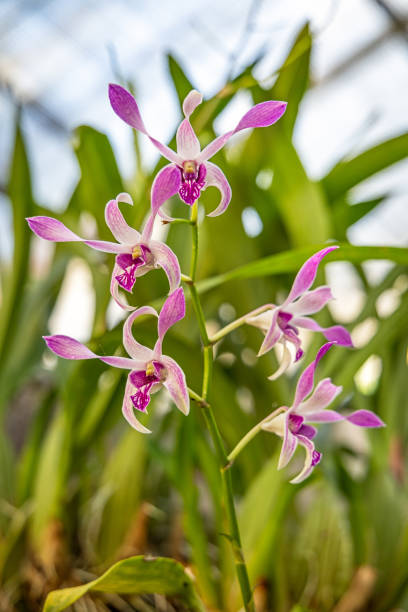
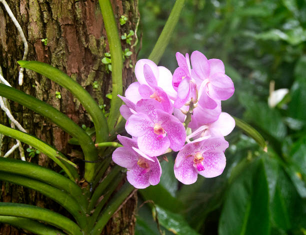
Orchids, being a diverse and extensive family of plants, have varying seasonal preferences depending on the specific type or species.Orchids can be cultivated year-round in controlled environments where temperature, humidity, and light conditions can be adjusted. Many orchid enthusiasts and commercial growers choose to cultivate orchids indoors or in greenhouses to provide a stable environment.
Some orchids do have seasonal preferences based on their natural habitat. For example, some orchids may have a growth period during the warmer months and a rest period during the cooler months. Understanding the specific requirements of the orchid species you are cultivating is crucial for optimal growth.
Orchids are widely cultivated and sold across various states in India, with specific regions having a strong presence in orchid cultivation and trade. The market share and cultivation prominence can vary, but some states are known for their significant contribution to the orchid industry.
Some major states that produce Orchids are Arunachalpradesh,
Sikkim,Kerala,Weatbengal.
Orchids are commonly planted in well-draining orchid mixes or substrates. These mixes typically include components like bark, sphagnum moss, perlite, and sometimes coconut husk chunks. These materials provide aeration, drainage, and mimic the conditions of their natural epiphytic environment.
Bark-based mixes are popular for many orchid varieties. The bark chunks allow for good airflow around the roots and prevent waterlogging. Different types of bark, such as fir bark or pine bark, can be used.
If you are starting from seeds, orchid germination can take several weeks to months, and the seedlings will require careful care during the early stages of growth.Orchids can be slow-growing, and it may take time to see results, especially if you are starting from seeds or young plants.
ఆర్కిడ్లు, విభిన్నమైన మరియు విస్తృతమైన మొక్కల కుటుంబం, నిర్దిష్ట రకం లేదా జాతులపై ఆధారపడి కాలానుగుణ ప్రాధాన్యతలను కలిగి ఉంటాయి. ఉష్ణోగ్రత, తేమ మరియు కాంతి పరిస్థితులను సర్దుబాటు చేయగల నియంత్రిత వాతావరణంలో ఆర్కిడ్లను ఏడాది పొడవునా సాగు చేయవచ్చు. చాలా మంది ఆర్చిడ్ ప్రియులు మరియు వాణిజ్య పెంపకందారులు స్థిరమైన వాతావరణాన్ని అందించడానికి ఇంటి లోపల లేదా గ్రీన్హౌస్లలో ఆర్కిడ్లను పండించడాన్ని ఎంచుకుంటారు.
కొన్ని ఆర్కిడ్లు వాటి సహజ ఆవాసాల ఆధారంగా కాలానుగుణ ప్రాధాన్యతలను కలిగి ఉంటాయి. ఉదాహరణకు, కొన్ని ఆర్కిడ్లు వెచ్చని నెలల్లో వృద్ధి కాలం మరియు చల్లని నెలలలో విశ్రాంతి కాలం కలిగి ఉండవచ్చు. మీరు సాగు చేస్తున్న ఆర్చిడ్ జాతుల నిర్దిష్ట అవసరాలను అర్థం చేసుకోవడం సరైన పెరుగుదలకు కీలకం.
భారతదేశంలోని వివిధ రాష్ట్రాలలో ఆర్కిడ్లు విస్తృతంగా సాగు చేయబడుతున్నాయి మరియు విక్రయించబడుతున్నాయి, నిర్దిష్ట ప్రాంతాలు ఆర్చిడ్ సాగు మరియు వాణిజ్యంలో బలమైన ఉనికిని కలిగి ఉన్నాయి. మార్కెట్ వాటా మరియు సాగు ప్రాముఖ్యత మారవచ్చు, అయితే కొన్ని రాష్ట్రాలు ఆర్చిడ్ పరిశ్రమకు గణనీయమైన సహకారం అందించినందుకు ప్రసిద్ధి చెందాయి.
ఆర్కిడ్లను ఉత్పత్తి చేసే కొన్ని ప్రధాన రాష్ట్రాలు అరుణాచలప్రదేశ్, సిక్కిం, కేరళ, వెట్బెంగాల్.
ఆర్కిడ్లను సాధారణంగా బాగా ఎండిపోయే ఆర్చిడ్ మిశ్రమాలు లేదా ఉపరితలాలలో పండిస్తారు. ఈ మిశ్రమాలలో సాధారణంగా బెరడు, స్పాగ్నమ్ నాచు, పెర్లైట్ మరియు కొన్నిసార్లు కొబ్బరి పొట్టు భాగాలు ఉంటాయి. ఈ పదార్థాలు గాలిని అందిస్తాయి, పారుదలని అందిస్తాయి మరియు వాటి సహజ ఎపిఫైటిక్ వాతావరణం యొక్క పరిస్థితులను అనుకరిస్తాయి.
బెరడు ఆధారిత మిశ్రమాలు అనేక ఆర్చిడ్ రకాలకు ప్రసిద్ధి చెందాయి. బెరడు భాగాలు వేర్ల చుట్టూ మంచి గాలి ప్రవాహాన్ని అందిస్తాయి మరియు నీటి ఎద్దడిని నివారిస్తాయి. ఫిర్ బెరడు లేదా పైన్ బెరడు వంటి వివిధ రకాల బెరడును ఉపయోగించవచ్చు.
మీరు విత్తనాల నుండి ప్రారంభించినట్లయితే, ఆర్చిడ్ అంకురోత్పత్తి చాలా వారాల నుండి నెలల వరకు పడుతుంది, మరియు మొలకల ఎదుగుదల ప్రారంభ దశలలో జాగ్రత్తగా జాగ్రత్త అవసరం. ఆర్కిడ్లు నెమ్మదిగా పెరుగుతాయి మరియు ఫలితాలను చూడటానికి సమయం పట్టవచ్చు, ప్రత్యేకించి మీరు విత్తనాలు లేదా యువ మొక్కల నుండి ప్రారంభమవుతుంది.
7. LILY / 7. కలువ పువ్వు
Lily flowers are typically grown in the spring and early summer. They thrive in well-drained soil and require sunlight for optimal growth.In India, lilies are cultivated and sold in various states, but specific regions may have different preferences and conditions for their cultivation. Some states known for flower cultivation, including lilies, are Karnataka, Tamil Nadu, Maharashtra, Himachal Pradesh, and West Bengal. However, the popularity and cultivation practices can vary.
Lilies do not thrive in waterlogged soil, so it's essential to have well-drained soil to prevent water stagnation around the bulbs. Sandy loam or loamy soil types are often suitable.Lilies prefer slightly acidic to neutral soil pH ranging from 6.0 to 7.0. Adjusting the soil pH within this range can help ensure optimal growth.
Incorporating organic matter, such as well-rotted compost or aged manure, into the soil can enhance its fertility and structure. This is beneficial for lilies, as they require nutrient-rich soil.
Lilies benefit from good soil aeration. Loose, well-aerated soil allows the roots to develop properly and facilitates nutrient absorption.
Lilies generally thrive in slightly acidic to neutral soil with a pH range of 6.0 to 6.5. Maintaining the correct pH level is important for nutrient absorption.Most lilies thrive in full sunlight. Ensure they receive at least 6-8 hours of direct sunlight daily.
లిల్లీ పువ్వులు సాధారణంగా వసంతకాలంలో మరియు వేసవి ప్రారంభంలో పెరుగుతాయి. ఇవి బాగా ఎండిపోయిన నేలలో వృద్ధి చెందుతాయి మరియు సరైన ఎదుగుదలకు సూర్యరశ్మి అవసరం.భారతదేశంలో, లిల్లీలను వివిధ రాష్ట్రాల్లో పండిస్తారు మరియు విక్రయిస్తారు, అయితే నిర్దిష్ట ప్రాంతాలలో వాటి సాగుకు భిన్నమైన ప్రాధాన్యతలు మరియు పరిస్థితులు ఉండవచ్చు. లిల్లీలతో సహా పూల సాగుకు ప్రసిద్ధి చెందిన కొన్ని రాష్ట్రాలు కర్ణాటక, తమిళనాడు, మహారాష్ట్ర, హిమాచల్ ప్రదేశ్ మరియు పశ్చిమ బెంగాల్. అయితే, ప్రజాదరణ మరియు సాగు పద్ధతులు మారవచ్చు.
లిల్లీస్ నీటితో నిండిన నేలలో వృద్ధి చెందవు, కాబట్టి బల్బుల చుట్టూ నీరు నిలిచిపోకుండా ఉండటానికి బాగా ఎండిపోయిన నేలను కలిగి ఉండటం అవసరం. ఇసుక లోవామ్ లేదా లోమీ నేల రకాలు తరచుగా అనుకూలంగా ఉంటాయి.లిల్లీస్ 6.0 నుండి 7.0 వరకు ఉండే తటస్థ నేల pH నుండి కొద్దిగా ఆమ్లతను ఇష్టపడతాయి. ఈ పరిధిలో నేల pHని సర్దుబాటు చేయడం సరైన వృద్ధిని నిర్ధారించడంలో సహాయపడుతుంది.
బాగా కుళ్ళిన కంపోస్ట్ లేదా వృద్ధాప్య ఎరువు వంటి సేంద్రియ పదార్థాలను మట్టిలో చేర్చడం వల్ల దాని సంతానోత్పత్తి మరియు నిర్మాణాన్ని మెరుగుపరుస్తుంది. ఇది లిల్లీలకు ప్రయోజనకరంగా ఉంటుంది, ఎందుకంటే వాటికి పోషకాలు అధికంగా ఉండే నేల అవసరం.
లిల్లీస్ మంచి నేల గాలి నుండి ప్రయోజనం పొందుతాయి. వదులుగా, బాగా గాలిని నింపిన నేల మూలాలు సరిగ్గా అభివృద్ధి చెందడానికి మరియు పోషకాల శోషణను సులభతరం చేస్తుంది.
లిల్లీస్ సాధారణంగా 6.0 నుండి 6.5 pH పరిధితో కొద్దిగా ఆమ్లం నుండి తటస్థ నేలలో వృద్ధి చెందుతాయి. పోషకాల శోషణకు సరైన pH స్థాయిని నిర్వహించడం చాలా ముఖ్యం. చాలా లిల్లీలు పూర్తి సూర్యకాంతిలో వృద్ధి చెందుతాయి. వారు ప్రతిరోజూ కనీసం 6-8 గంటల ప్రత్యక్ష సూర్యకాంతిని పొందారని నిర్ధారించుకోండి.
8. CARNATION / 8. కార్నేషన్
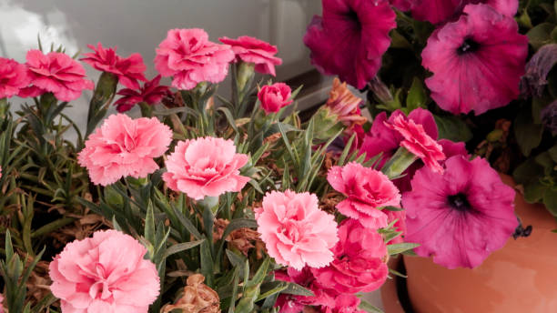
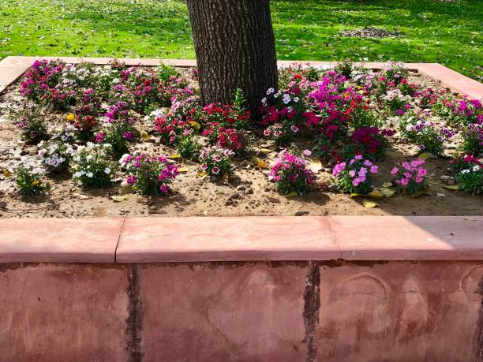
Carnation flowers are typically grown during the cooler seasons of the year. They are often planted in the late summer or early fall, depending on the climate and specific growing conditions of the region.
Carnation flowers are cultivated and sold in various states, but some regions are known for their significant production and market share. In India, for example, the state of Karnataka is one of the largest producers of carnation flowers. Other states like Tamil Nadu and Maharashtra also have notable cultivation
Carnations prefer soil that drains well to prevent waterlogging, which can lead to root rot. Sandy loam or loamy soil types are ideal for carnations.
The soil pH should be slightly acidic to neutral, ideally ranging from 6.0 to 7.0. Adjusting soil pH to this range promotes nutrient availability and healthy plant growth.Carnations grow best in soil with a loose and friable texture. This allows for good root development and water penetration. Compacted or heavy clay soils should be amended with organic matter to improve drainage and texture.
Carnations typically start flowering about 12-16 weeks after planting, although this can vary depending on the variety and growing conditions. Regular harvesting of flowers can prolong the flowering period and encourage more blooms.
కార్నేషన్ పువ్వులు సాధారణంగా సంవత్సరంలో చల్లని సీజన్లలో పెరుగుతాయి. ఈ ప్రాంతం యొక్క వాతావరణం మరియు నిర్దిష్ట పెరుగుతున్న పరిస్థితులపై ఆధారపడి వాటిని తరచుగా వేసవి చివరిలో లేదా పతనం ప్రారంభంలో పండిస్తారు.
కార్నేషన్ పువ్వులు వివిధ రాష్ట్రాలలో పండించబడతాయి మరియు విక్రయించబడతాయి, అయితే కొన్ని ప్రాంతాలు వాటి గణనీయమైన ఉత్పత్తి మరియు మార్కెట్ వాటాకు ప్రసిద్ధి చెందాయి. ఉదాహరణకు, భారతదేశంలో, కర్నాటక రాష్ట్రం కార్నేషన్ పువ్వుల అతిపెద్ద ఉత్పత్తిదారుల్లో ఒకటి. తమిళనాడు మరియు మహారాష్ట్ర వంటి ఇతర రాష్ట్రాలు కూడా చెప్పుకోదగిన సాగును కలిగి ఉన్నాయి
కార్నేషన్లు నీటి ఎద్దడిని నివారించడానికి బాగా ప్రవహించే మట్టిని ఇష్టపడతాయి, ఇది రూట్ తెగులుకు దారితీస్తుంది. ఇసుక లోమీ లేదా లోమీ నేల రకాలు కార్నేషన్లకు అనువైనవి.
నేల pH కొద్దిగా ఆమ్లం నుండి తటస్థంగా ఉండాలి, ఆదర్శంగా 6.0 నుండి 7.0 వరకు ఉండాలి. నేల pHని ఈ శ్రేణికి సర్దుబాటు చేయడం వలన పోషకాల లభ్యత మరియు ఆరోగ్యకరమైన మొక్కల పెరుగుదలను ప్రోత్సహిస్తుంది. కార్నేషన్లు వదులుగా మరియు విరిగిపోయే ఆకృతితో మట్టిలో బాగా పెరుగుతాయి. ఇది మంచి రూట్ డెవలప్మెంట్ మరియు నీటి చొచ్చుకుపోవడానికి అనుమతిస్తుంది. పారుదల మరియు ఆకృతిని మెరుగుపరచడానికి సేంద్రియ పదార్ధాలతో కుదించబడిన లేదా భారీ బంకమట్టి నేలలను సవరించాలి.
కార్నేషన్లు సాధారణంగా నాటిన 12-16 వారాల తర్వాత పుష్పించడం ప్రారంభిస్తాయి, అయితే ఇది వివిధ మరియు పెరుగుతున్న పరిస్థితులపై ఆధారపడి ఉంటుంది. పుష్పాలను క్రమం తప్పకుండా కోయడం వల్ల పుష్పించే కాలాన్ని పొడిగించవచ్చు మరియు మరింత పుష్పించేలా ప్రోత్సహిస్తుంది.
9. GERBERA / 9. జెర్బెరా
.jpg)
Gerbera flowers thrive in temperatures between 18 to 24°C (65 to 75°F) during the day and slightly cooler temperatures at night. They are sensitive to extreme heat and frost, so they are often grown in areas with moderate temperatures.
Gerberas prefer full sunlight but can tolerate partial shade, especially in hotter climates. They typically require at least 6 to 8 hours of direct sunlight daily for optimal growth and flowering.
Gerberas prefer well-drained soil with good fertility. A loamy soil with a pH level between 5.5 to 6.5 is ideal for gerbera cultivation. Soil that is rich in organic matter and has good drainage is essential for healthy root development.
Gerberas are heavy feeders and benefit from regular fertilization during the growing season. A balanced fertilizer formulated for flowering plants can be applied every 4 to 6 weeks to promote healthy growth and blooming.
Regular monitoring for pests and diseases is important to prevent damage to gerbera plants. Common pests include aphids, spider mites, and thrips, while diseases such as powdery mildew and botrytis can affect foliage and flowers.
Gerbera flowers are popular and cultivated in various states across India, but some regions are known for their significant production and market share. Karnataka is one of the leading states for gerbera cultivation and production in India. Other states like Maharashtra, Tamil Nadu, Andhra Pradesh, and West Bengal also have notable cultivation.
While gerberas prefer well-drained soil, they also require consistent moisture, especially during the growing season. Mulching the soil surface with organic materials helps retain moisture, regulate soil temperature, and suppress weeds.
Gerbera flowers typically start blooming about 12-16 weeks after planting, although this can vary depending on the variety and growing conditions. Regular harvesting of flowers can prolong the flowering period and encourage more blooms.
జెర్బెరా పువ్వులు పగటిపూట 18 నుండి 24°C (65 నుండి 75°F) మధ్య ఉష్ణోగ్రతలు మరియు రాత్రిపూట కొద్దిగా చల్లగా ఉండే ఉష్ణోగ్రతలలో వృద్ధి చెందుతాయి. అవి తీవ్రమైన వేడి మరియు మంచుకు సున్నితంగా ఉంటాయి, కాబట్టి అవి తరచుగా మితమైన ఉష్ణోగ్రతలు ఉన్న ప్రాంతాల్లో పెరుగుతాయి.
గెర్బెరాస్ పూర్తి సూర్యకాంతిని ఇష్టపడతాయి కానీ పాక్షిక నీడను తట్టుకోగలవు, ముఖ్యంగా వేడి వాతావరణంలో. వారు సాధారణంగా సరైన పెరుగుదల మరియు పుష్పించే కోసం రోజుకు కనీసం 6 నుండి 8 గంటల ప్రత్యక్ష సూర్యకాంతి అవసరం.
గెర్బెరాస్ మంచి సంతానోత్పత్తితో బాగా ఎండిపోయిన నేలను ఇష్టపడతాయి. 5.5 నుండి 6.5 మధ్య pH స్థాయి ఉన్న లోమీ నేల గెర్బెరా సాగుకు అనువైనది. సేంద్రీయ పదార్థంతో కూడిన మరియు మంచి పారుదల ఉన్న నేల ఆరోగ్యకరమైన రూట్ అభివృద్ధికి అవసరం.
గెర్బెరాస్ భారీ ఫీడర్లు మరియు పెరుగుతున్న కాలంలో సాధారణ ఫలదీకరణం నుండి ప్రయోజనం పొందుతాయి. ఆరోగ్యకరమైన ఎదుగుదల మరియు వికసించడాన్ని ప్రోత్సహించడానికి పుష్పించే మొక్కల కోసం రూపొందించిన సమతుల్య ఎరువులు ప్రతి 4 నుండి 6 వారాలకు వర్తించవచ్చు.
జెర్బెరా మొక్కలకు నష్టం జరగకుండా నిరోధించడానికి తెగుళ్లు మరియు వ్యాధులను క్రమం తప్పకుండా పర్యవేక్షించడం చాలా ముఖ్యం. సాధారణ తెగుళ్లలో అఫిడ్స్, స్పైడర్ పురుగులు మరియు త్రిప్స్ ఉన్నాయి, అయితే బూజు తెగులు మరియు బోట్రిటిస్ వంటి వ్యాధులు ఆకులు మరియు పువ్వులను ప్రభావితం చేస్తాయి.
గెర్బెరా పువ్వులు భారతదేశంలోని వివిధ రాష్ట్రాల్లో ప్రసిద్ధి చెందాయి మరియు సాగు చేయబడతాయి, అయితే కొన్ని ప్రాంతాలు వాటి గణనీయమైన ఉత్పత్తి మరియు మార్కెట్ వాటాకు ప్రసిద్ధి చెందాయి. భారతదేశంలో గెర్బెరా సాగు మరియు ఉత్పత్తిలో కర్ణాటక అగ్రగామిగా ఉంది. మహారాష్ట్ర, తమిళనాడు, ఆంధ్రప్రదేశ్ మరియు పశ్చిమ బెంగాల్ వంటి ఇతర రాష్ట్రాలు కూడా చెప్పుకోదగిన సాగును కలిగి ఉన్నాయి.
గెర్బెరాస్ బాగా ఎండిపోయిన నేలను ఇష్టపడతాయి, ముఖ్యంగా పెరుగుతున్న కాలంలో వాటికి స్థిరమైన తేమ కూడా అవసరం. సేంద్రియ పదార్ధాలతో నేల ఉపరితలాన్ని కప్పడం తేమను నిలుపుకోవడం, నేల ఉష్ణోగ్రతను నియంత్రించడం మరియు కలుపు మొక్కలను అణిచివేసేందుకు సహాయపడుతుంది.
గెర్బెరా పువ్వులు సాధారణంగా నాటిన 12-16 వారాల తర్వాత వికసించడం ప్రారంభిస్తాయి, అయినప్పటికీ ఇది వివిధ మరియు పెరుగుతున్న పరిస్థితులపై ఆధారపడి ఉంటుంది. పుష్పాలను క్రమం తప్పకుండా కోయడం వల్ల పుష్పించే కాలాన్ని పొడిగించవచ్చు మరియు మరింత పుష్పించేలా ప్రోత్సహిస్తుంది.
10. CHRYSANTHEMUM / 10.చామంతి
.jpg)
Chrysanthemum flowers are typically grown during the cooler seasons of the year. They are often planted in the spring or early summer, depending on the climate and specific growing conditions of the region. Chrysanthemums prefer temperatures ranging from 60 to 70°F (15 to 21°C) during the growing season.
In regions with mild winters, chrysanthemums may also be planted in the fall for late-season blooms. However, they are sensitive to frost, so it's essential to consider the local climate and frost dates when planning the planting time.
Chrysanthemum flowers are cultivated and sold in various states across India, but some regions are known for their significant production and market share. Karnataka is one of the leading states for chrysanthemum cultivation and production in India. Other states like Tamil Nadu, Maharashtra, Andhra Pradesh, and West Bengal also have notable cultivation.
Chrysanthemums require soil that drains well to prevent waterlogging, which can lead to root rot. Sandy loam or loamy soil with good drainage is ideal for chrysanthemum cultivation.
The optimal soil pH for chrysanthemums is between 6.0 to 7.0. Slightly acidic to neutral soil promotes better nutrient availability and uptake for healthy plant growth.
Chrysanthemums thrive in soil with a loose, friable texture that allows for good root development and water penetration. Compacted or heavy clay soils should be amended with organic matter to improve drainage and texture. Incorporating organic matter such as compost, well-rotted manure, or peat moss into the soil can improve soil structure, fertility, and moisture retention.
This helps provide essential nutrients and promotes healthy plant growth.Chrysanthemum flowers typically start blooming about 12-16 weeks after planting, although this can vary depending on the variety and growing conditions. Regular harvesting of flowers can prolong the flowering period and encourage more blooms.
క్రిసాన్తిమం పువ్వులు సాధారణంగా సంవత్సరంలో చల్లని సీజన్లలో పెరుగుతాయి. వారు తరచుగా వసంత ఋతువులో లేదా వేసవి ప్రారంభంలో పండిస్తారు, ప్రాంతం యొక్క వాతావరణం మరియు నిర్దిష్ట పెరుగుతున్న పరిస్థితులపై ఆధారపడి ఉంటుంది. క్రిసాన్తిమమ్స్ పెరుగుతున్న కాలంలో 60 నుండి 70°F (15 నుండి 21°C) వరకు ఉష్ణోగ్రతలను ఇష్టపడతాయి.
తేలికపాటి శీతాకాలాలు ఉన్న ప్రాంతాల్లో, క్రిసాన్తిమమ్లను చివరి సీజన్లో వికసించడం కోసం పతనంలో కూడా నాటవచ్చు. అయినప్పటికీ, అవి మంచుకు సున్నితంగా ఉంటాయి, కాబట్టి నాటడం సమయాన్ని ప్లాన్ చేసేటప్పుడు స్థానిక వాతావరణం మరియు మంచు తేదీలను పరిగణనలోకి తీసుకోవడం చాలా అవసరం.
క్రిసాన్తిమం పువ్వులు భారతదేశం అంతటా వివిధ రాష్ట్రాలలో సాగు చేయబడుతున్నాయి మరియు విక్రయించబడుతున్నాయి, అయితే కొన్ని ప్రాంతాలు వాటి గణనీయమైన ఉత్పత్తి మరియు మార్కెట్ వాటాకు ప్రసిద్ధి చెందాయి. భారతదేశంలో క్రిసాన్తిమం సాగు మరియు ఉత్పత్తిలో కర్ణాటక ప్రముఖ రాష్ట్రాలలో ఒకటి. తమిళనాడు, మహారాష్ట్ర, ఆంధ్రప్రదేశ్ మరియు పశ్చిమ బెంగాల్ వంటి ఇతర రాష్ట్రాలు కూడా చెప్పుకోదగిన సాగును కలిగి ఉన్నాయి.
క్రిసాన్తిమమ్లకు నీటి ఎద్దడిని నివారించడానికి బాగా ప్రవహించే నేల అవసరం, ఇది రూట్ తెగులుకు దారితీస్తుంది. మంచి నీటి పారుదల ఉన్న ఇసుక లోమ్ లేదా లోమీ నేల క్రిసాన్తిమం సాగుకు అనువైనది.
క్రిసాన్తిమమ్స్ కోసం సరైన నేల pH 6.0 నుండి 7.0 మధ్య ఉంటుంది. తటస్థ నేలకి కొద్దిగా ఆమ్లత్వం ఉండటం వల్ల మంచి పోషకాల లభ్యత మరియు ఆరోగ్యకరమైన మొక్కల పెరుగుదలకు దోహదపడుతుంది.
క్రిసాన్తిమమ్లు వదులుగా, విరిగిపోయే ఆకృతితో మట్టిలో వృద్ధి చెందుతాయి, ఇది మంచి రూట్ అభివృద్ధి మరియు నీటి చొచ్చుకుపోవడానికి అనుమతిస్తుంది. పారుదల మరియు ఆకృతిని మెరుగుపరచడానికి సేంద్రియ పదార్ధాలతో కుదించబడిన లేదా భారీ బంకమట్టి నేలలను సవరించాలి. కంపోస్ట్, బాగా కుళ్ళిన ఎరువు లేదా పీట్ నాచు వంటి సేంద్రీయ పదార్థాలను మట్టిలో చేర్చడం వల్ల నేల నిర్మాణం, సంతానోత్పత్తి మరియు తేమ నిలుపుదల మెరుగుపడుతుంది.
ఇది అవసరమైన పోషకాలను అందించడంలో సహాయపడుతుంది మరియు ఆరోగ్యకరమైన మొక్కల పెరుగుదలను ప్రోత్సహిస్తుంది. క్రిసాన్తిమం పువ్వులు సాధారణంగా నాటిన 12-16 వారాల తర్వాత వికసించడం ప్రారంభిస్తాయి, అయినప్పటికీ ఇది వివిధ రకాల మరియు పెరుగుతున్న పరిస్థితులపై ఆధారపడి ఉంటుంది. పుష్పాలను క్రమం తప్పకుండా కోయడం వల్ల పుష్పించే కాలాన్ని పొడిగించవచ్చు మరియు మరింత పుష్పించేలా ప్రోత్సహిస్తుంది.
11. HIBISCUS / 11.మందార
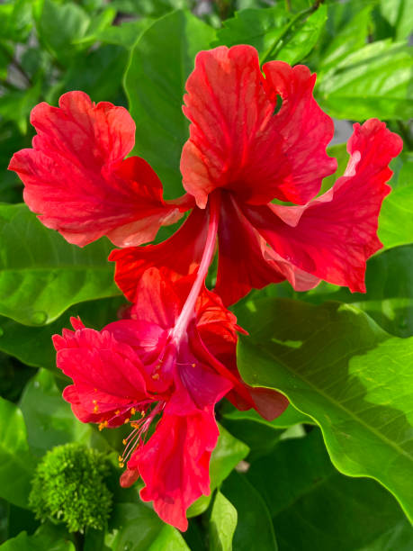
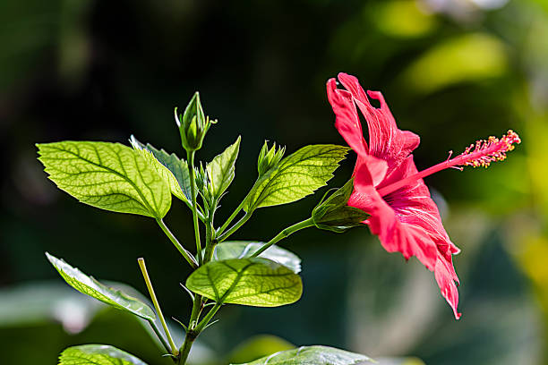
Hibiscus flowers are typically grown in warm climates and thrive in tropical or subtropical regions. They are commonly planted in the spring or early summer when temperatures are consistently warm. However, hibiscus can also be grown as perennial plants in regions with mild winters.
Hibiscus flowers are cultivated and sold in various states across India, but some regions are known for their significant production and market share. States like Tamil Nadu, Karnataka, Andhra Pradesh, Kerala, and Maharashtra are among the leading producers of hibiscus flowers in India.
Hibiscus plants thrive in soil that drains well to prevent waterlogging, which can lead to root rot. Sandy loam or loamy soil with good drainage is ideal for hibiscus cultivation.The optimal soil pH for hibiscus is between 6.0 to 7.0. Slightly acidic to neutral soil promotes better nutrient availability and uptake for healthy plant growth.
Hibiscus plants prefer soil with a loose, friable texture that allows for good root development and water penetration. Compacted or heavy clay soils should be amended with organic matter to improve drainage and texture.
Incorporating organic matter such as compost, well-rotted manure, or peat moss into the soil can improve soil structure, fertility, and moisture retention. This helps provide essential nutrients and promotes healthy plant growth.
Blooming time varies for different flowers. Hibiscus flower bud will not take much time to bloom and blooms within few days.
మందార పువ్వులు సాధారణంగా వెచ్చని వాతావరణంలో పెరుగుతాయి మరియు ఉష్ణమండల లేదా ఉపఉష్ణమండల ప్రాంతాలలో వృద్ధి చెందుతాయి. ఉష్ణోగ్రతలు స్థిరంగా వెచ్చగా ఉన్నప్పుడు వాటిని సాధారణంగా వసంతకాలంలో లేదా వేసవి ప్రారంభంలో పండిస్తారు. అయినప్పటికీ, మందారాన్ని తేలికపాటి చలికాలం ఉండే ప్రాంతాల్లో శాశ్వత మొక్కలుగా కూడా పెంచవచ్చు.
మందార పువ్వులు భారతదేశం అంతటా వివిధ రాష్ట్రాలలో సాగు చేయబడుతున్నాయి మరియు విక్రయించబడుతున్నాయి, అయితే కొన్ని ప్రాంతాలు వాటి గణనీయమైన ఉత్పత్తి మరియు మార్కెట్ వాటాకు ప్రసిద్ధి చెందాయి. భారతదేశంలో మందార పువ్వుల ఉత్పత్తిలో తమిళనాడు, కర్ణాటక, ఆంధ్రప్రదేశ్, కేరళ మరియు మహారాష్ట్ర వంటి రాష్ట్రాలు అగ్రగామిగా ఉన్నాయి.
మందార మొక్కలు నీటి ఎద్దడిని నివారించడానికి బాగా ఎండిపోయే మట్టిలో వృద్ధి చెందుతాయి, ఇది రూట్ తెగులుకు దారితీస్తుంది. మందార సాగుకు మంచి పారుదల ఉన్న ఇసుక లోమీ లేదా లోమీ నేల అనువైనది. మందార కోసం సరైన నేల pH 6.0 నుండి 7.0 మధ్య ఉంటుంది. తటస్థ నేలకి కొద్దిగా ఆమ్లత్వం ఉండటం వల్ల మంచి పోషకాల లభ్యత మరియు ఆరోగ్యకరమైన మొక్కల పెరుగుదలకు దోహదపడుతుంది.
మందార మొక్కలు మంచి రూట్ డెవలప్మెంట్ మరియు నీటి చొచ్చుకుపోవడానికి అనుమతించే వదులుగా, ఫ్రైబుల్ ఆకృతితో మట్టిని ఇష్టపడతాయి. పారుదల మరియు ఆకృతిని మెరుగుపరచడానికి సేంద్రియ పదార్ధాలతో కుదించబడిన లేదా భారీ బంకమట్టి నేలలను సవరించాలి.
కంపోస్ట్, బాగా కుళ్ళిన ఎరువు లేదా పీట్ నాచు వంటి సేంద్రీయ పదార్థాలను మట్టిలో చేర్చడం వల్ల నేల నిర్మాణం, సంతానోత్పత్తి మరియు తేమ నిలుపుదల మెరుగుపడుతుంది. ఇది అవసరమైన పోషకాలను అందించడంలో సహాయపడుతుంది మరియు ఆరోగ్యకరమైన మొక్కల పెరుగుదలను ప్రోత్సహిస్తుంది.
వివిధ పువ్వుల కోసం పుష్పించే సమయం మారుతూ ఉంటుంది. మందార పూల మొగ్గ వికసించటానికి ఎక్కువ సమయం పట్టదు మరియు కొద్ది రోజుల్లోనే వికసిస్తుంది.
12. GLADIOLUS / 12.ఉరఃఫలక పుష్పం
.jpg) 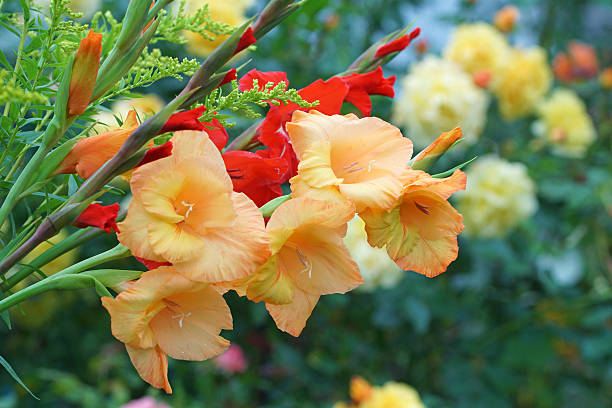
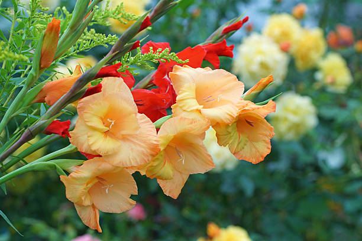
Gladiolus flowers are typically grown during the warm season, particularly in the spring and summer months. They are sensitive to frost and prefer temperatures above freezing. Planting usually occurs after the last frost date in the spring, and gladiolus bulbs can be planted throughout the spring and early summer, depending on the climate and local growing conditions.
In cooler climates, gladiolus bulbs can be planted in the spring for summer blooms. In warmer climates with mild winters, they can also be planted in the fall for winter or early spring blooms.
Gladiolus flowers are cultivated and sold in various states across India, but some regions are known for their significant production and market share. States like Karnataka, Tamil Nadu, Andhra Pradesh, Maharashtra, and West Bengal are among the leading producers of gladiolus flowers in India.
Gladiolus bulbs are susceptible to rotting in waterlogged soil, so it's essential to plant them in soil that drains well. Sandy loam or loamy soil with good drainage is ideal for gladiolus cultivation.
The optimal soil pH for gladiolus is between 6.0 to 7.0. Slightly acidic to neutral soil promotes better nutrient availability and uptake for healthy plant growth.
Incorporating organic matter such as compost, well-rotted manure, or peat moss into the soil can improve soil structure, fertility, and moisture retention. This helps provide essential nutrients and promotes healthy plant growth.
Gladiolus takes 110-120 days to produce spikes. While harvesting, at least four basal leaves should be retained on the plant to ensure proper development of corms and cormels. Soak the stem in water to avoid wilting and lodging of stem and flower.
గ్లాడియోలస్ పువ్వులు సాధారణంగా వెచ్చని కాలంలో, ముఖ్యంగా వసంత మరియు వేసవి నెలలలో పెరుగుతాయి. అవి మంచుకు సున్నితంగా ఉంటాయి మరియు గడ్డకట్టే కంటే ఎక్కువ ఉష్ణోగ్రతలను ఇష్టపడతాయి. నాటడం సాధారణంగా వసంత ఋతువులో చివరి మంచు తేదీ తర్వాత జరుగుతుంది మరియు వాతావరణం మరియు స్థానిక పెరుగుతున్న పరిస్థితులపై ఆధారపడి వసంతకాలం మరియు వేసవి ప్రారంభంలో గ్లాడియోలస్ బల్బులను నాటవచ్చు.
చల్లని వాతావరణంలో, వేసవిలో పుష్పించేలా వసంతకాలంలో ఉరఃఫలక గడ్డలను నాటవచ్చు. తేలికపాటి శీతాకాలాలతో వెచ్చని వాతావరణంలో, వాటిని శీతాకాలం లేదా వసంత ఋతువులో పుష్పించే కోసం పతనంలో కూడా నాటవచ్చు.
గ్లాడియోలస్ పువ్వులు భారతదేశం అంతటా వివిధ రాష్ట్రాల్లో సాగు చేయబడుతున్నాయి మరియు విక్రయించబడుతున్నాయి, అయితే కొన్ని ప్రాంతాలు వాటి గణనీయమైన ఉత్పత్తి మరియు మార్కెట్ వాటాకు ప్రసిద్ధి చెందాయి. భారతదేశంలో గ్లాడియోలస్ పువ్వుల ఉత్పత్తిలో కర్ణాటక, తమిళనాడు, ఆంధ్రప్రదేశ్, మహారాష్ట్ర మరియు పశ్చిమ బెంగాల్ వంటి రాష్ట్రాలు అగ్రగామిగా ఉన్నాయి.
గ్లాడియోలస్ గడ్డలు నీటితో నిండిన నేలలో కుళ్ళిపోయే అవకాశం ఉంది, కాబట్టి వాటిని బాగా ఎండిపోయే మట్టిలో నాటడం చాలా అవసరం. మంచి పారుదల ఉన్న ఇసుక లోమ్ లేదా లోమీ నేల ఉరఃఫలక సాగుకు అనువైనది.
ఉరఃఫలకానికి సరైన నేల pH 6.0 నుండి 7.0 మధ్య ఉంటుంది. తటస్థ నేలకి కొద్దిగా ఆమ్లత్వం ఉండటం వల్ల మంచి పోషకాల లభ్యత మరియు ఆరోగ్యకరమైన మొక్కల పెరుగుదలకు దోహదపడుతుంది.
కంపోస్ట్, బాగా కుళ్ళిన ఎరువు లేదా పీట్ నాచు వంటి సేంద్రీయ పదార్థాలను మట్టిలో చేర్చడం వల్ల నేల నిర్మాణం, సంతానోత్పత్తి మరియు తేమ నిలుపుదల మెరుగుపడుతుంది. ఇది అవసరమైన పోషకాలను అందించడంలో సహాయపడుతుంది మరియు ఆరోగ్యకరమైన మొక్కల పెరుగుదలను ప్రోత్సహిస్తుంది.
గ్లాడియోలస్ స్పైక్లను ఉత్పత్తి చేయడానికి 110-120 రోజులు పడుతుంది. కోత కోస్తున్నప్పుడు, మొక్కకు కనీసం నాలుగు బేసల్ ఆకులను ఉంచాలి, ఇది తృణధాన్యాలు మరియు కొర్మెల్స్ యొక్క సరైన అభివృద్ధిని నిర్ధారించడానికి. కాండం మరియు పువ్వులు వడలిపోకుండా మరియు ఉండకుండా ఉండటానికి కాండం నీటిలో నానబెట్టండి.
13. TULIP / 13.తులిప్
Tulip flowers are typically grown during the cooler seasons of the year, particularly in the autumn or early winter for most regions. Planting tulip bulbs usually occurs in the fall, several weeks before the ground freezes, allowing them to establish roots before the onset of winter.
In regions with milder winters or Mediterranean climates, tulips may be planted in late winter or early spring for blooms in the following spring. However, they generally require a period of cold dormancy to stimulate flowering.
Tulip flowers are not commonly cultivated in India due to the climate not being conducive to their growth. They require a cold period during dormancy which is typically not found in Indian regions. Therefore, they are not extensively cultivated in India, and their market share is limited compared to other flowers that are more suitable for the Indian climate.
Tulip bulbs are susceptible to rotting in waterlogged soil, so it's essential to plant them in soil that drains well. Sandy loam or loamy soil with good drainage is ideal for tulip cultivation.
The optimal soil pH for tulips is between 6.0 to 7.0. Slightly acidic to neutral soil promotes better nutrient availability and uptake for healthy plant growth.
Tulip bulbs prefer soil with a loose, friable texture that allows for good root development and water penetration. Compacted or heavy clay soils should be amended with organic matter to improve drainage and texture.
Incorporating organic matter such as compost, well-rotted manure, or peat moss into the soil can improve soil structure, fertility, and moisture retention. This helps provide essential nutrients and promotes healthy plant growth.
The time for bloom after chilling varies by species. Tulips need 10 to 16 weeks of chilling and will sprout one to three weeks after the required period.
తులిప్ పువ్వులు సాధారణంగా సంవత్సరంలో చల్లటి సీజన్లలో, ముఖ్యంగా శరదృతువు లేదా చాలా ప్రాంతాలలో చలికాలం ప్రారంభంలో పెరుగుతాయి. తులిప్ బల్బులను నాటడం సాధారణంగా శరదృతువులో జరుగుతుంది, నేల గడ్డకట్టడానికి చాలా వారాల ముందు, శీతాకాలం ప్రారంభానికి ముందు వాటిని మూలాలను స్థాపించడానికి వీలు కల్పిస్తుంది.
తేలికపాటి శీతాకాలాలు లేదా మధ్యధరా వాతావరణం ఉన్న ప్రాంతాల్లో, తులిప్లను శీతాకాలం చివరలో లేదా వసంత ఋతువు ప్రారంభంలో నాటవచ్చు, ఇది తరువాతి వసంతకాలంలో వికసిస్తుంది. అయినప్పటికీ, పుష్పించేటటువంటి ఉద్దీపన కోసం అవి సాధారణంగా చల్లని నిద్రాణస్థితిని కలిగి ఉంటాయి.
తులిప్ పువ్వుల పెరుగుదలకు వాతావరణం అనుకూలంగా లేనందున భారతదేశంలో సాధారణంగా సాగు చేయబడదు. భారతీయ ప్రాంతాలలో సాధారణంగా కనిపించని నిద్రాణస్థితిలో వారికి చల్లని కాలం అవసరం. అందువల్ల, అవి భారతదేశంలో విస్తృతంగా సాగు చేయబడవు మరియు భారతీయ వాతావరణానికి మరింత అనుకూలమైన ఇతర పువ్వులతో పోలిస్తే వాటి మార్కెట్ వాటా పరిమితం.
తులిప్ గడ్డలు నీటితో నిండిన నేలలో కుళ్ళిపోయే అవకాశం ఉంది, కాబట్టి వాటిని బాగా ఎండిపోయే మట్టిలో నాటడం చాలా అవసరం. తులిప్ సాగుకు మంచి పారుదల ఉన్న ఇసుక లోమ్ లేదా లోమీ నేల అనువైనది.
తులిప్లకు సరైన నేల pH 6.0 నుండి 7.0 మధ్య ఉంటుంది. తటస్థ నేలకి కొద్దిగా ఆమ్లత్వం ఉండటం వల్ల మంచి పోషకాల లభ్యత మరియు ఆరోగ్యకరమైన మొక్కల పెరుగుదలకు దోహదపడుతుంది.
తులిప్ గడ్డలు మంచి రూట్ అభివృద్ధి మరియు నీటి చొచ్చుకుపోవడానికి అనుమతించే వదులుగా, ఫ్రైబుల్ ఆకృతితో మట్టిని ఇష్టపడతాయి. పారుదల మరియు ఆకృతిని మెరుగుపరచడానికి సేంద్రియ పదార్ధాలతో కుదించబడిన లేదా భారీ బంకమట్టి నేలలను సవరించాలి.
కంపోస్ట్, బాగా కుళ్ళిన ఎరువు లేదా పీట్ నాచు వంటి సేంద్రీయ పదార్థాలను మట్టిలో చేర్చడం వల్ల నేల నిర్మాణం, సంతానోత్పత్తి మరియు తేమ నిలుపుదల మెరుగుపడుతుంది. ఇది అవసరమైన పోషకాలను అందించడంలో సహాయపడుతుంది మరియు ఆరోగ్యకరమైన మొక్కల పెరుగుదలను ప్రోత్సహిస్తుంది.
శీతలీకరణ తర్వాత పుష్పించే సమయం జాతులను బట్టి మారుతుంది. తులిప్స్కు 10 నుండి 16 వారాల చల్లదనం అవసరం మరియు అవసరమైన కాలం తర్వాత ఒకటి నుండి మూడు వారాల వరకు మొలకెత్తుతుంది.
14. DAFFODIL / 14.డాఫోడిల్
Daffodil flowers are typically grown during the cooler seasons of the year, particularly in the autumn or early winter for most regions. Planting daffodil bulbs usually occurs in the fall, several weeks before the ground freezes, allowing them to establish roots before winter.
In regions with milder winters or Mediterranean climates, daffodils may be planted in late winter or early spring for blooms in the following spring. However, they generally require a period of cold dormancy to stimulate flowering.
Daffodil flowers are not commonly cultivated in India due to the climate not being conducive to their growth. They require a period of cold dormancy which is typically not found in Indian regions. Therefore, they are not extensively cultivated in India, and their market share is limited compared to other flowers that are more suitable for the Indian climate.
Daffodil bulbs are susceptible to rotting in waterlogged soil, so it's essential to plant them in soil that drains well. Sandy loam or loamy soil with good drainage is ideal for daffodil cultivation.
The optimal soil pH for daffodils is between 6.0 to 7.0. Slightly acidic to neutral soil promotes better nutrient availability and uptake for healthy plant growth.
Daffodil bulbs prefer soil with a loose, friable texture that allows for good root development and water penetration. Compacted or heavy clay soils should be amended with organic matter to improve drainage and texture.
With careful planning, you can enjoy 3 months of daffodil blooms! There are even places that sell "100-day mixes" of bulbs to make it easy for you to enjoy an extended daffodil season.
డాఫోడిల్ పువ్వులు సాధారణంగా సంవత్సరంలో చల్లటి సీజన్లలో, ముఖ్యంగా శరదృతువు లేదా చాలా ప్రాంతాలలో చలికాలం ప్రారంభంలో పెరుగుతాయి. డాఫోడిల్ బల్బులను నాటడం సాధారణంగా శరదృతువులో జరుగుతుంది, నేల గడ్డకట్టడానికి చాలా వారాల ముందు, చలికాలం ముందు మూలాలను స్థాపించడానికి వీలు కల్పిస్తుంది.
తేలికపాటి శీతాకాలాలు లేదా మధ్యధరా శీతోష్ణస్థితి ఉన్న ప్రాంతాల్లో, డాఫోడిల్లను శీతాకాలం చివరిలో లేదా వసంత ఋతువు ప్రారంభంలో నాటవచ్చు, ఇది తరువాతి వసంతకాలంలో వికసిస్తుంది. అయినప్పటికీ, పుష్పించేటటువంటి ఉద్దీపన కోసం అవి సాధారణంగా చల్లని నిద్రాణస్థితిని కలిగి ఉంటాయి.
డాఫోడిల్ పువ్వుల పెరుగుదలకు వాతావరణం అనుకూలంగా లేనందున భారతదేశంలో సాధారణంగా సాగు చేయబడదు. భారతీయ ప్రాంతాలలో సాధారణంగా కనిపించని శీతల నిద్రాణస్థితి వారికి అవసరం. అందువల్ల, అవి భారతదేశంలో విస్తృతంగా సాగు చేయబడవు మరియు భారతీయ వాతావరణానికి మరింత అనుకూలమైన ఇతర పువ్వులతో పోలిస్తే వాటి మార్కెట్ వాటా పరిమితం.
డాఫోడిల్ గడ్డలు నీటితో నిండిన నేలలో కుళ్ళిపోయే అవకాశం ఉంది, కాబట్టి వాటిని బాగా ఎండిపోయే మట్టిలో నాటడం చాలా అవసరం. మంచి పారుదల ఉన్న ఇసుక లోమ్ లేదా లోమీ నేల డాఫోడిల్ సాగుకు అనువైనది.
డాఫోడిల్స్ కోసం సరైన నేల pH 6.0 నుండి 7.0 మధ్య ఉంటుంది. తటస్థ నేలకి కొద్దిగా ఆమ్లత్వం ఉండటం వల్ల మంచి పోషకాల లభ్యత మరియు ఆరోగ్యకరమైన మొక్కల పెరుగుదలకు దోహదపడుతుంది.
డాఫోడిల్ బల్బులు మంచి రూట్ అభివృద్ధి మరియు నీటి చొచ్చుకుపోవడానికి అనుమతించే వదులుగా, ఫ్రైబుల్ ఆకృతితో మట్టిని ఇష్టపడతాయి. పారుదల మరియు ఆకృతిని మెరుగుపరచడానికి సేంద్రియ పదార్ధాలతో కుదించబడిన లేదా భారీ బంకమట్టి నేలలను సవరించాలి.
జాగ్రత్తగా ప్రణాళికతో, మీరు 3 నెలల డాఫోడిల్ పుష్పాలను ఆస్వాదించవచ్చు! మీరు పొడిగించిన డాఫోడిల్ సీజన్ను ఆస్వాదించడాన్ని సులభతరం చేయడానికి బల్బుల "100-రోజుల మిశ్రమాలను" విక్రయించే స్థలాలు కూడా ఉన్నాయి.
15. IRIS / 15.కనుపాప పువ్వు
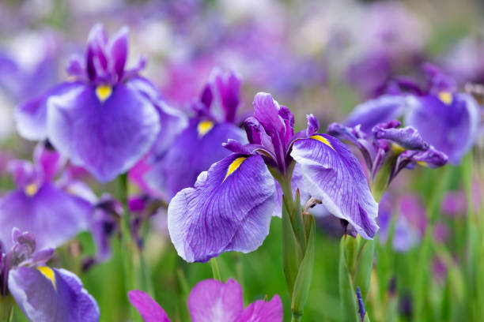
Irises are perennial plants that can be grown in various seasons depending on the specific variety and climate. However, they are typically planted and grown during the cooler seasons of the year, such as autumn or spring, depending on the region.
Irises are cultivated and sold in various states across India, but some regions are known for their significant production and market share. States like Karnataka, Tamil Nadu, Maharashtra, Andhra Pradesh, and West Bengal are among the leading producers of irises in India.
Irises thrive in soil that drains well and does not become waterlogged. Sandy loam or loamy soil with good drainage is ideal. Avoid heavy clay soils that retain water, as this can lead to root rot.
Irises prefer slightly acidic to neutral soil with a pH range between 6.0 to 7.0. Soil pH outside of this range may affect nutrient availability and plant growth. Irises prefer soil with a loose, friable texture that allows for good root development and water penetration. Amending heavy soils with organic matter such as compost or well-rotted manure can improve soil structure and drainage.
Only 60-75% of Iris bloom the first year after planting. Sometimes they need an extra year to become established. Unusual weather conditions or late spring frosts can also harm Iris blooms.
కనుపాపలు శాశ్వత మొక్కలు, వీటిని నిర్దిష్ట రకం మరియు వాతావరణాన్ని బట్టి వివిధ సీజన్లలో పెంచవచ్చు. అయినప్పటికీ, అవి సాధారణంగా ప్రాంతాన్ని బట్టి శరదృతువు లేదా వసంతకాలం వంటి చల్లని సీజన్లలో నాటబడతాయి మరియు పెంచబడతాయి.
కనుపాపలు భారతదేశం అంతటా వివిధ రాష్ట్రాలలో పండించబడతాయి మరియు విక్రయించబడతాయి, అయితే కొన్ని ప్రాంతాలు వాటి గణనీయమైన ఉత్పత్తి మరియు మార్కెట్ వాటాకు ప్రసిద్ధి చెందాయి. భారతదేశంలో కనుపాపల ఉత్పత్తిలో కర్ణాటక, తమిళనాడు, మహారాష్ట్ర, ఆంధ్రప్రదేశ్ మరియు పశ్చిమ బెంగాల్ వంటి రాష్ట్రాలు అగ్రగామిగా ఉన్నాయి.
కనుపాపలు బాగా ప్రవహించే మట్టిలో బాగా వృద్ధి చెందుతాయి మరియు నీటితో నిండి ఉండవు. మంచి పారుదల ఉన్న ఇసుక లోమీ లేదా లోమీ నేల అనువైనది. నీటిని నిలుపుకునే భారీ బంకమట్టి నేలలను నివారించండి, ఇది రూట్ తెగులుకు దారితీస్తుంది.
కనుపాపలు 6.0 నుండి 7.0 మధ్య pH పరిధిని కలిగి ఉండే తటస్థ మట్టికి కొద్దిగా ఆమ్లాన్ని ఇష్టపడతాయి. ఈ పరిధి వెలుపల నేల pH పోషక లభ్యత మరియు మొక్కల పెరుగుదలను ప్రభావితం చేయవచ్చు. కనుపాపలు మంచి రూట్ అభివృద్ధి మరియు నీటి చొచ్చుకుపోవడానికి అనుమతించే వదులుగా, ఫ్రైబుల్ ఆకృతితో మట్టిని ఇష్టపడతాయి. కంపోస్ట్ లేదా బాగా కుళ్ళిన ఎరువు వంటి సేంద్రీయ పదార్థంతో భారీ నేలలను సవరించడం వల్ల నేల నిర్మాణం మరియు పారుదల మెరుగుపడుతుంది.
నాటిన మొదటి సంవత్సరంలో 60-75% ఐరిస్ మాత్రమే వికసిస్తుంది. కొన్నిసార్లు వారు స్థాపించబడటానికి అదనపు సంవత్సరం అవసరం. అసాధారణ వాతావరణ పరిస్థితులు లేదా వసంత ఋతువు చివరి మంచు కూడా ఐరిస్ పువ్వులకు హాని కలిగిస్తుంది.
16. DAISIES / 16.డైసీస్ ఫ్లవర్
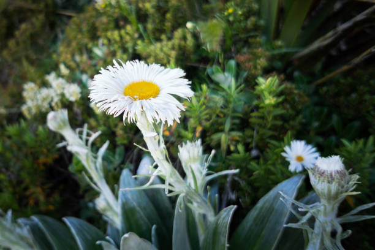
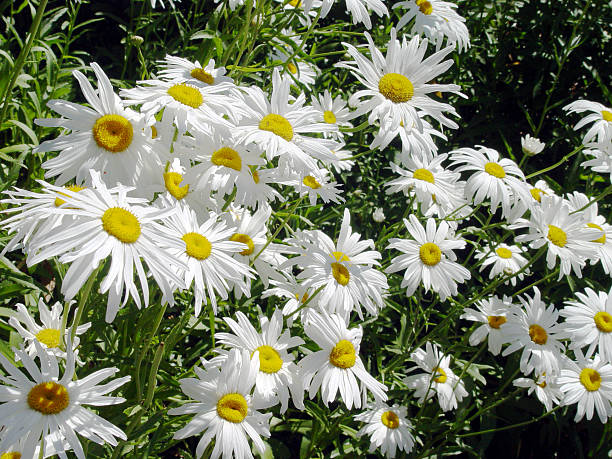
Daisy flowers are typically grown during the warmer seasons of the year, such as spring and summer. They thrive in sunlight and warmer temperatures, making these seasons ideal for their growth and blooming. Planting daisy seeds or transplants is commonly done in the spring after the risk of frost has passed, allowing them to establish and bloom throughout the summer months.
States like Karnataka, Maharashtra, Tamil Nadu, Andhra Pradesh, and West Bengal are among the leading producers of daisies in India. These states have favorable climatic conditions and suitable agricultural practices for daisy cultivation, leading to higher production and market share.
As for the states where daisies are sold the most, it often depends on factors such as urbanization, population density, and consumer preferences. Metropolitan areas and regions with a high concentration of floral markets, flower shops, and florists are likely to have a higher demand for daisies.
Daisies prefer soil that drains well and does not become waterlogged. Sandy loam or loamy soil with good drainage is ideal for daisy cultivation. Avoid heavy clay soils that retain water, as this can lead to root rot.
The optimal soil pH for daisies is between 6.0 to 7.0. Slightly acidic to neutral soil promotes better nutrient availability and uptake for healthy plant growth.Daisies prefer soil with a loose, friable texture that allows for good root development and water penetration. Amending heavy soils with organic matter such as compost or well-rotted manure can improve soil structure and drainage.
Flower seed packets rarely list estimated days to maturity, but most annual flowers need about 95 days from seed to flower. The ones that made my list start popping blooms in 60 to 70 days when grown under spring conditions, and they also tolerate light frost.
డైసీ పువ్వులు సాధారణంగా వసంత ఋతువు మరియు వేసవి వంటి సంవత్సరంలో వెచ్చని సీజన్లలో పెరుగుతాయి. ఇవి సూర్యరశ్మి మరియు వెచ్చని ఉష్ణోగ్రతలలో వృద్ధి చెందుతాయి, ఈ సీజన్లను వాటి పెరుగుదలకు మరియు వికసించడానికి అనువైనదిగా చేస్తుంది. డైసీ గింజలు నాటడం లేదా మార్పిడి చేయడం సాధారణంగా ఫ్రాస్ట్ యొక్క ప్రమాదం దాటిన తర్వాత వసంతకాలంలో జరుగుతుంది, ఇది వేసవి నెలలలో వాటిని స్థాపించడానికి మరియు పుష్పించేలా చేస్తుంది.
కర్నాటక, మహారాష్ట్ర, తమిళనాడు, ఆంధ్రప్రదేశ్ మరియు పశ్చిమ బెంగాల్ వంటి రాష్ట్రాలు భారతదేశంలో డైసీల ఉత్పత్తిలో అగ్రగామిగా ఉన్నాయి. ఈ రాష్ట్రాలు డైసీ సాగుకు అనుకూలమైన వాతావరణ పరిస్థితులు మరియు అనువైన వ్యవసాయ పద్ధతులను కలిగి ఉన్నాయి, ఇది అధిక ఉత్పత్తి మరియు మార్కెట్ వాటాకు దారి తీస్తుంది.
డైసీలు ఎక్కువగా విక్రయించబడే రాష్ట్రాలకు సంబంధించి, ఇది తరచుగా పట్టణీకరణ, జనాభా సాంద్రత మరియు వినియోగదారుల ప్రాధాన్యతల వంటి అంశాలపై ఆధారపడి ఉంటుంది. పూల మార్కెట్లు, పూల దుకాణాలు మరియు పూల వ్యాపారులు ఎక్కువగా ఉండే మెట్రోపాలిటన్ ప్రాంతాలు మరియు ప్రాంతాలలో డైసీలకు ఎక్కువ డిమాండ్ ఉంటుంది.
డైసీలు బాగా ప్రవహించే మట్టిని ఇష్టపడతాయి మరియు నీరు నిలువవు. మంచి పారుదల ఉన్న ఇసుక లోమ్ లేదా లోమీ నేల డైసీ సాగుకు అనువైనది. నీటిని నిలుపుకునే భారీ బంకమట్టి నేలలను నివారించండి, ఇది రూట్ తెగులుకు దారితీస్తుంది.
డైసీలకు సరైన నేల pH 6.0 నుండి 7.0 మధ్య ఉంటుంది. తటస్థ మట్టికి కొద్దిగా ఆమ్లం ఉండటం వల్ల మంచి పోషకాల లభ్యత మరియు ఆరోగ్యకరమైన మొక్కల పెరుగుదలకు ఉపశమనాన్ని ప్రోత్సహిస్తుంది. డైసీలు మంచి రూట్ అభివృద్ధి మరియు నీరు చొచ్చుకుపోవడానికి వీలు కల్పించే వదులుగా, ఫ్రైబుల్ ఆకృతితో మట్టిని ఇష్టపడతాయి. కంపోస్ట్ లేదా బాగా కుళ్ళిన ఎరువు వంటి సేంద్రీయ పదార్థంతో భారీ నేలలను సవరించడం వల్ల నేల నిర్మాణం మరియు పారుదల మెరుగుపడుతుంది.
ఫ్లవర్ సీడ్ ప్యాకెట్లు చాలా అరుదుగా పరిపక్వత వరకు అంచనా వేసిన రోజులను జాబితా చేస్తాయి, అయితే చాలా వార్షిక పువ్వులు విత్తనం నుండి పువ్వు వరకు 95 రోజులు అవసరం. నా జాబితాను తయారు చేసినవి వసంత పరిస్థితులలో పెరిగినప్పుడు 60 నుండి 70 రోజులలో వికసించడం ప్రారంభించాయి మరియు అవి తేలికపాటి మంచును కూడా తట్టుకోగలవు.
17. ASTER / 17.ఆస్టర్ పువ్వు
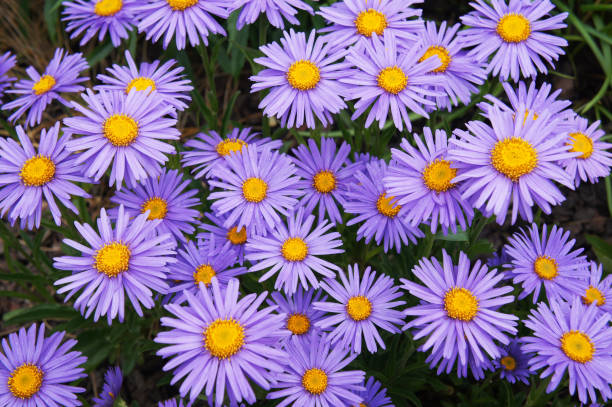
Aster flowers are typically grown during the cooler seasons of the year, such as autumn or early spring, depending on the region and climate. In temperate climates, aster seeds or transplants are often planted in the spring after the last frost date or in the late summer for blooms in the fall.
Asters thrive in cooler temperatures and can withstand light frosts, making them suitable for planting in early spring or late summer to early fall. However, the specific timing for planting and blooming may vary depending on the region's climate and the specific variety of asters being grown.
Asters are cultivated and sold in various states across India, but some regions are known for their significant production and market share. States like Karnataka, Maharashtra, Tamil Nadu, Andhra Pradesh, and West Bengal are among the leading producers of asters in India.
Asters thrive in soil that drains well and does not become waterlogged. Sandy loam or loamy soil with good drainage is ideal for aster cultivation. Avoid heavy clay soils that retain water, as this can lead to root rot.
The optimal soil pH for asters is between 6.0 to 7.0. Slightly acidic to neutral soil promotes better nutrient availability and uptake for healthy plant growth.
Overall, from sowing seeds to full maturity, it can take approximately 4 to 6 months for asters to grow completely, depending on various factors. Providing optimal growing conditions and care throughout the process can help ensure healthy growth and beautiful blooms.
ప్రాంతం మరియు వాతావరణాన్ని బట్టి ఆస్టర్ పువ్వులు సాధారణంగా శరదృతువు లేదా వసంత ఋతువు వంటి సంవత్సరంలో చల్లని సీజన్లలో పెరుగుతాయి. సమశీతోష్ణ శీతోష్ణస్థితిలో, ఆస్టర్ విత్తనాలు లేదా మార్పిడిని తరచుగా వసంతకాలంలో చివరి మంచు తేదీ తర్వాత లేదా వేసవి చివరిలో శరదృతువులో వికసిస్తుంది.
Asters చల్లని ఉష్ణోగ్రతలలో వృద్ధి చెందుతాయి మరియు తేలికపాటి మంచును తట్టుకోగలవు, వాటిని వసంత ఋతువులో లేదా వేసవి చివరిలో నుండి ప్రారంభ పతనం వరకు నాటడానికి అనుకూలంగా ఉంటాయి. అయితే, నాటడం మరియు పుష్పించే నిర్దిష్ట సమయం ప్రాంతం యొక్క వాతావరణం మరియు నిర్దిష్ట రకాల ఆస్టర్లను బట్టి మారవచ్చు.
భారతదేశం అంతటా వివిధ రాష్ట్రాలలో ఆస్టర్లను పండిస్తారు మరియు విక్రయిస్తారు, అయితే కొన్ని ప్రాంతాలు వాటి గణనీయమైన ఉత్పత్తి మరియు మార్కెట్ వాటాకు ప్రసిద్ధి చెందాయి. కర్నాటక, మహారాష్ట్ర, తమిళనాడు, ఆంధ్రప్రదేశ్ మరియు పశ్చిమ బెంగాల్ వంటి రాష్ట్రాలు భారతదేశంలో ఆస్టర్ల ఉత్పత్తిలో అగ్రగామిగా ఉన్నాయి.
Asters బాగా ప్రవహించే మరియు నీటితో నిండిన మట్టిలో వృద్ధి చెందుతాయి. మంచి పారుదల ఉన్న ఇసుక లోమ్ లేదా లోమీ నేల ఆస్టర్ సాగుకు అనువైనది. నీటిని నిలుపుకునే భారీ బంకమట్టి నేలలను నివారించండి, ఇది రూట్ తెగులుకు దారితీస్తుంది.
asters కోసం సరైన నేల pH 6.0 నుండి 7.0 మధ్య ఉంటుంది. తటస్థ నేలకి కొద్దిగా ఆమ్లత్వం ఉండటం వల్ల మంచి పోషకాల లభ్యత మరియు ఆరోగ్యకరమైన మొక్కల పెరుగుదలకు దోహదపడుతుంది.
మొత్తంమీద, విత్తనాలు విత్తడం నుండి పూర్తి పరిపక్వత వరకు, వివిధ కారకాలపై ఆధారపడి, asters పూర్తిగా పెరగడానికి సుమారు 4 నుండి 6 నెలల సమయం పడుతుంది. ప్రక్రియ అంతటా సరైన పెరుగుతున్న పరిస్థితులు మరియు సంరక్షణను అందించడం ఆరోగ్యకరమైన పెరుగుదల మరియు అందమైన పుష్పాలను నిర్ధారించడంలో సహాయపడుతుంది.
18. ZINNIA / 18.జిన్నియా పువ్వు
.jpg)
Zinnia flowers are typically grown during the warmer seasons of the year, such as spring and summer. They thrive in sunlight and warmer temperatures, making these seasons ideal for their growth and blooming.
In temperate climates, zinnia seeds or transplants are often planted in the spring after the last frost date, allowing them to establish and bloom throughout the summer months. In warmer climates, zinnias may be planted earlier in the spring or even in late winter for blooms in the spring and summer.
Zinnia flowers are cultivated and sold in various states across India, but some regions are known for their significant production and market share. States like Karnataka, Maharashtra, Tamil Nadu, Andhra Pradesh, and West Bengal are among the leading producers of zinnias in India.
Zinnias thrive in soil that drains well and does not become waterlogged. Sandy loam or loamy soil with good drainage is ideal for zinnia cultivation. Avoid heavy clay soils that retain water, as this can lead to root rot.
The optimal soil pH for zinnias is between 5.5 to 7.5. Slightly acidic to slightly alkaline soil promotes better nutrient availability and uptake for healthy plant growth.
Overall, from sowing seeds to full maturity and peak bloom, it can take approximately 10 to 14 weeks for zinnias to grow completely, depending on various factors. Providing optimal growing conditions, such as adequate sunlight, water, and fertilizer, can help expedite the growth process and ensure healthy, vibrant blooms.
జిన్నియా పువ్వులు సాధారణంగా వసంత ఋతువు మరియు వేసవి కాలం వంటి వెచ్చని సీజన్లలో పెరుగుతాయి. ఇవి సూర్యరశ్మి మరియు వెచ్చని ఉష్ణోగ్రతలలో వృద్ధి చెందుతాయి, ఈ సీజన్లను వాటి పెరుగుదలకు మరియు వికసించడానికి అనువైనదిగా చేస్తుంది.
సమశీతోష్ణ శీతోష్ణస్థితిలో, జిన్నియా విత్తనాలు లేదా మార్పిడిని తరచుగా చివరి మంచు తేదీ తర్వాత వసంత ఋతువులో పండిస్తారు, ఇవి వేసవి నెలలలో ఏర్పాటు మరియు పుష్పించేలా చేస్తాయి. వెచ్చని వాతావరణంలో, జిన్నియాలను వసంత ఋతువులో ముందుగా లేదా శీతాకాలం చివరిలో కూడా వసంత ఋతువు మరియు వేసవిలో పుష్పించేలా నాటవచ్చు.
జిన్నియా పువ్వులు భారతదేశం అంతటా వివిధ రాష్ట్రాలలో సాగు చేయబడుతున్నాయి మరియు విక్రయించబడుతున్నాయి, అయితే కొన్ని ప్రాంతాలు వాటి గణనీయమైన ఉత్పత్తి మరియు మార్కెట్ వాటాకు ప్రసిద్ధి చెందాయి. కర్నాటక, మహారాష్ట్ర, తమిళనాడు, ఆంధ్రప్రదేశ్ మరియు పశ్చిమ బెంగాల్ వంటి రాష్ట్రాలు భారతదేశంలో జిన్నియాల ఉత్పత్తిలో అగ్రగామిగా ఉన్నాయి.
జిన్నియాలు బాగా ప్రవహించే నేలలో వృద్ధి చెందుతాయి మరియు నీటితో నిండి ఉండవు. జిన్నియా సాగుకు మంచి పారుదల ఉన్న ఇసుక లోమీ లేదా లోమీ నేల అనువైనది. నీటిని నిలుపుకునే భారీ బంకమట్టి నేలలను నివారించండి, ఇది రూట్ తెగులుకు దారితీస్తుంది.
జిన్నియాలకు సరైన నేల pH 5.5 నుండి 7.5 మధ్య ఉంటుంది. కొద్దిగా ఆమ్లం నుండి కొద్దిగా ఆల్కలీన్ నేల మంచి పోషకాల లభ్యతను మరియు ఆరోగ్యకరమైన మొక్కల పెరుగుదలను ప్రోత్సహిస్తుంది.
మొత్తంమీద, విత్తనాలు విత్తడం నుండి పూర్తి పరిపక్వత మరియు గరిష్ట పుష్పించే వరకు, వివిధ కారకాలపై ఆధారపడి జిన్నియాలు పూర్తిగా పెరగడానికి సుమారు 10 నుండి 14 వారాలు పట్టవచ్చు. తగినంత సూర్యరశ్మి, నీరు మరియు ఎరువులు వంటి సరైన పెరుగుతున్న పరిస్థితులను అందించడం, వృద్ధి ప్రక్రియను వేగవంతం చేయడంలో మరియు ఆరోగ్యకరమైన, శక్తివంతమైన పుష్పాలను నిర్ధారించడంలో సహాయపడుతుంది.
19. PANSY / 19.పాన్సీపువ్వు
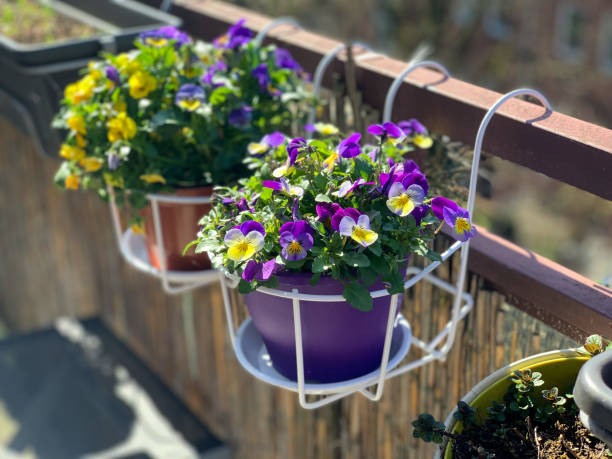
Pansy flowers are typically grown during the cooler seasons of the year, such as autumn and winter, and even into early spring in some regions. They thrive in cooler temperatures and are often planted as winter annuals in temperate climates.
In regions with mild winters, pansies are often planted in the fall, around September to October, allowing them to establish roots and bloom throughout the cooler months. In colder climates, pansies may be planted in late summer or early fall to ensure they have time to establish before the onset of winter.
Pansy flowers are cultivated and sold in various states across India, but some regions are known for their significant production and market share. States with cooler climates and higher demand for winter annuals tend to cultivate and sell more pansies.
States like Himachal Pradesh, Uttarakhand, Jammu and Kashmir, and parts of northern India are among the leading producers of pansies. These regions have suitable climatic conditions for pansy cultivation, with cooler temperatures during the winter months.
As for market share, urban areas with a high demand for ornamental plants and flowers, such as metropolitan cities and tourist destinations, often have a significant market share for pansies. Cities like Delhi, Mumbai, Bangalore, and Kolkata are known for their vibrant flower markets and may have higher demand for pansies.
Pansies prefer soil that drains well and does not become waterlogged. Sandy loam or loamy soil with good drainage is ideal for pansy cultivation. Avoid heavy clay soils that retain water, as this can lead to root rot.
The optimal soil pH for pansies is between 5.5 to 6.5. Slightly acidic to neutral soil promotes better nutrient availability and uptake for healthy plant growth.
Overall, from sowing seeds to full maturity and peak bloom, it can take approximately 12 to 16 weeks for pansies to grow completely, depending on various factors. Providing optimal growing conditions, such as adequate sunlight, water, and fertilizer, can help expedite the growth process and ensure healthy, vibrant blooms.
పాన్సీ పువ్వులు సాధారణంగా శరదృతువు మరియు శీతాకాలం వంటి చల్లని సీజన్లలో మరియు కొన్ని ప్రాంతాలలో వసంతకాలం ప్రారంభంలో కూడా పెరుగుతాయి. ఇవి చల్లటి ఉష్ణోగ్రతలలో వృద్ధి చెందుతాయి మరియు తరచుగా సమశీతోష్ణ వాతావరణంలో శీతాకాలపు వార్షికంగా నాటబడతాయి.
తేలికపాటి శీతాకాలాలు ఉన్న ప్రాంతాలలో, పాన్సీలను తరచుగా శరదృతువులో, సెప్టెంబర్ నుండి అక్టోబర్ వరకు నాటడం జరుగుతుంది, తద్వారా అవి చల్లటి నెలలలో వేర్లు మరియు పుష్పించేలా చేస్తాయి. చల్లని వాతావరణంలో, శీతాకాలం ప్రారంభానికి ముందు వాటిని ఏర్పాటు చేయడానికి సమయం ఉందని నిర్ధారించుకోవడానికి వేసవి చివరిలో లేదా పతనం ప్రారంభంలో పాన్సీలను నాటవచ్చు.
భారతదేశం అంతటా వివిధ రాష్ట్రాలలో పాన్సీ పువ్వులు సాగు చేయబడుతున్నాయి మరియు విక్రయించబడుతున్నాయి, అయితే కొన్ని ప్రాంతాలు వాటి గణనీయమైన ఉత్పత్తి మరియు మార్కెట్ వాటాకు ప్రసిద్ధి చెందాయి. చల్లటి వాతావరణం మరియు శీతాకాలపు యాన్యువల్స్కు ఎక్కువ డిమాండ్ ఉన్న రాష్ట్రాలు ఎక్కువ పాన్సీలను పండించి విక్రయిస్తాయి.
హిమాచల్ ప్రదేశ్, ఉత్తరాఖండ్, జమ్మూ మరియు కాశ్మీర్ వంటి రాష్ట్రాలు మరియు ఉత్తర భారతదేశంలోని కొన్ని ప్రాంతాలు పాన్సీల ఉత్పత్తిలో అగ్రగామిగా ఉన్నాయి. ఈ ప్రాంతాలు పాన్సీ సాగుకు అనువైన వాతావరణ పరిస్థితులను కలిగి ఉంటాయి, శీతాకాలంలో చల్లటి ఉష్ణోగ్రతలు ఉంటాయి.
మార్కెట్ వాటా విషయానికొస్తే, మెట్రోపాలిటన్ నగరాలు మరియు పర్యాటక ప్రదేశాలు వంటి అలంకారమైన మొక్కలు మరియు పువ్వుల కోసం అధిక డిమాండ్ ఉన్న పట్టణ ప్రాంతాలు తరచుగా పాన్సీలకు గణనీయమైన మార్కెట్ వాటాను కలిగి ఉంటాయి. ఢిల్లీ, ముంబై, బెంగుళూరు మరియు కోల్కతా వంటి నగరాలు శక్తివంతమైన పూల మార్కెట్లకు ప్రసిద్ధి చెందాయి మరియు పాన్సీలకు ఎక్కువ డిమాండ్ ఉండవచ్చు.
పాన్సీలు బాగా ప్రవహించే మరియు నీటితో నిండిన మట్టిని ఇష్టపడతాయి. మంచి పారుదల ఉన్న ఇసుక లోమ్ లేదా లోమీ నేల పాన్సీ సాగుకు అనువైనది. నీటిని నిలుపుకునే భారీ బంకమట్టి నేలలను నివారించండి, ఇది రూట్ తెగులుకు దారితీస్తుంది.
పాన్సీలకు సరైన నేల pH 5.5 నుండి 6.5 మధ్య ఉంటుంది. తటస్థ నేలకి కొద్దిగా ఆమ్లత్వం ఉండటం వల్ల మంచి పోషకాల లభ్యత మరియు ఆరోగ్యకరమైన మొక్కల పెరుగుదలకు దోహదపడుతుంది.
మొత్తంగా, విత్తనాలు విత్తడం నుండి పూర్తి పరిపక్వత మరియు గరిష్ట పుష్పించే వరకు, వివిధ కారకాలపై ఆధారపడి, పాన్సీలు పూర్తిగా పెరగడానికి సుమారు 12 నుండి 16 వారాలు పట్టవచ్చు. తగినంత సూర్యరశ్మి, నీరు మరియు ఎరువులు వంటి సరైన పెరుగుతున్న పరిస్థితులను అందించడం, పెరుగుదల ప్రక్రియను వేగవంతం చేయడంలో మరియు ఆరోగ్యకరమైన, శక్తివంతమైన పుష్పాలను నిర్ధారించడంలో సహాయపడుతుంది..
20. PETUNIA / 20.పెటునియా పువ్వు
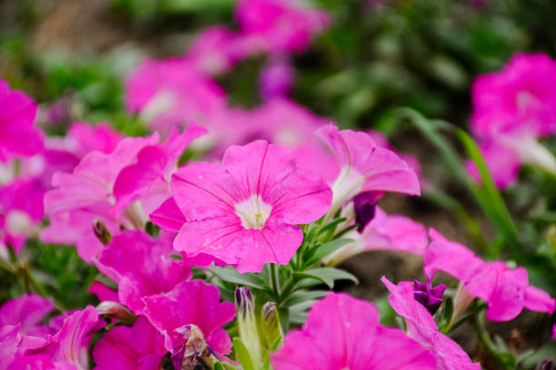
Petunia flowers are typically grown during the warmer seasons of the year, such as spring, summer, and early fall. They thrive in sunlight and warmer temperatures, making these seasons ideal for their growth and blooming.
In temperate climates, petunias are often planted in the spring after the last frost date, allowing them to establish and bloom throughout the summer months.
In warmer climates, petunias may be planted earlier in the spring or even in late winter for blooms in the spring and summer.Petunia flowers are cultivated and sold in various states across India, but some regions are known for their significant production and market share. States with suitable climatic conditions, strong horticultural industries, and higher demand for ornamental plants often cultivate and sell more petunias.
States like Karnataka, Maharashtra, Tamil Nadu, Andhra Pradesh, Gujarat, and West Bengal are among the leading producers of petunias in India. These states have favorable climates for petunia cultivation and have well-established floriculture sectors.
As for market share, urban areas with a high demand for ornamental plants and flowers, such as metropolitan cities and tourist destinations, often have a significant market share for petunias. Cities like Bangalore, Mumbai, Pune, Chennai, Hyderabad, and Kolkata are known for their vibrant flower markets and may have higher demand for petunias.
Petunias prefer soil that drains well and does not become waterlogged. Sandy loam or loamy soil with good drainage is ideal for petunia cultivation. Avoid heavy clay soils that retain water, as this can lead to root rot.
The optimal soil pH for petunias is between 5.5 to 6.5. Slightly acidic to neutral soil promotes better nutrient availability and uptake for healthy plant growth.
Overall, from sowing seeds to full maturity and peak bloom, it can take approximately 10 to 12 weeks for petunias to grow completely, depending on various factors. Providing optimal growing conditions, such as adequate sunlight, water, and fertilizer, can help expedite the growth process and ensure healthy, vibrant blooms.
పితూనియా పువ్వులు సాధారణంగా వసంత, వేసవి మరియు ప్రారంభ పతనం వంటి సంవత్సరంలో వెచ్చని సీజన్లలో పెరుగుతాయి. ఇవి సూర్యరశ్మి మరియు వెచ్చని ఉష్ణోగ్రతలలో వృద్ధి చెందుతాయి, ఈ సీజన్లను వాటి పెరుగుదలకు మరియు వికసించడానికి అనువైనదిగా చేస్తుంది.
సమశీతోష్ణ వాతావరణంలో, చివరి మంచు తేదీ తర్వాత petunias తరచుగా వసంత ఋతువులో నాటబడతాయి, వేసవి నెలలలో వాటిని స్థాపించడానికి మరియు పుష్పించేలా చేస్తుంది.
వెచ్చని వాతావరణంలో, పెటునియాలను వసంత ఋతువులో లేదా శీతాకాలం చివరలో కూడా వసంత ఋతువులో మరియు వేసవిలో వికసించడం కోసం నాటవచ్చు. భారతదేశంలోని వివిధ రాష్ట్రాలలో పెటునియా పువ్వులు సాగు చేయబడి, విక్రయించబడుతున్నాయి, అయితే కొన్ని ప్రాంతాలు వాటి గణనీయమైన ఉత్పత్తి మరియు మార్కెట్ వాటాకు ప్రసిద్ధి చెందాయి. అనుకూలమైన వాతావరణ పరిస్థితులు, బలమైన ఉద్యాన పరిశ్రమలు మరియు అలంకార మొక్కలకు అధిక డిమాండ్ ఉన్న రాష్ట్రాలు తరచుగా పెటునియాలను పండించి విక్రయిస్తాయి.
కర్నాటక, మహారాష్ట్ర, తమిళనాడు, ఆంధ్రప్రదేశ్, గుజరాత్ మరియు పశ్చిమ బెంగాల్ వంటి రాష్ట్రాలు భారతదేశంలో పెటునియాల ఉత్పత్తిలో అగ్రగామిగా ఉన్నాయి. ఈ రాష్ట్రాలు పెటునియా సాగుకు అనుకూలమైన వాతావరణాన్ని కలిగి ఉన్నాయి మరియు బాగా స్థిరపడిన పూల పెంపకం రంగాలను కలిగి ఉన్నాయి.
మార్కెట్ వాటా విషయానికొస్తే, మెట్రోపాలిటన్ నగరాలు మరియు పర్యాటక ప్రదేశాలు వంటి అలంకారమైన మొక్కలు మరియు పువ్వుల కోసం అధిక డిమాండ్ ఉన్న పట్టణ ప్రాంతాలు తరచుగా పెటునియాలకు గణనీయమైన మార్కెట్ వాటాను కలిగి ఉంటాయి. బెంగళూరు, ముంబై, పూణే, చెన్నై, హైదరాబాద్ మరియు కోల్కతా వంటి నగరాలు శక్తివంతమైన పూల మార్కెట్లకు ప్రసిద్ధి చెందాయి మరియు పెటునియాలకు ఎక్కువ డిమాండ్ ఉండవచ్చు.
పితూనియా బాగా ప్రవహించే మరియు నీటితో నిండిన మట్టిని ఇష్టపడతాయి. మంచి పారుదల ఉన్న ఇసుక లోమ్ లేదా లోమీ నేల పెటునియా సాగుకు అనువైనది. నీటిని నిలుపుకునే భారీ బంకమట్టి నేలలను నివారించండి, ఇది రూట్ తెగులుకు దారితీస్తుంది.
పెటునియాలకు సరైన నేల pH 5.5 నుండి 6.5 మధ్య ఉంటుంది. తటస్థ నేలకి కొద్దిగా ఆమ్లత్వం ఉండటం వల్ల మంచి పోషకాల లభ్యత మరియు ఆరోగ్యకరమైన మొక్కల పెరుగుదలకు దోహదపడుతుంది.
మొత్తంగా, విత్తనాలు విత్తడం నుండి పూర్తి పరిపక్వత మరియు గరిష్ట పుష్పించే వరకు, వివిధ కారకాలపై ఆధారపడి పెటునియాస్ పూర్తిగా పెరగడానికి సుమారు 10 నుండి 12 వారాలు పడుతుంది. తగినంత సూర్యరశ్మి, నీరు మరియు ఎరువులు వంటి సరైన పెరుగుతున్న పరిస్థితులను అందించడం, పెరుగుదల ప్రక్రియను వేగవంతం చేయడంలో మరియు ఆరోగ్యకరమైన, శక్తివంతమైన పుష్పాలను నిర్ధారించడంలో సహాయపడుతుంది.
21. COSMOS / 21.కాస్మోస్ పుష్పం
Cosmos flowers are typically grown during the warmer seasons of the year, such as spring and summer. They thrive in sunlight and warmer temperatures, making these seasons ideal for their growth and blooming.
In temperate climates, cosmos seeds can be sown directly outdoors after the last frost date in the spring. They will continue to grow and bloom throughout the summer months until the first frost in the fall.In warmer climates or regions with mild winters, cosmos may also be grown as winter annuals, planted in the fall for blooms during the cooler months and early spring.
Cosmos flowers are cultivated and sold in various states across India, but some regions are known for their significant production and market share. States with suitable climatic conditions, strong horticultural industries, and higher demand for ornamental plants often cultivate and sell more cosmos flowers.
States like Karnataka, Maharashtra, Tamil Nadu, Andhra Pradesh, Gujarat, and West Bengal are among the leading producers of cosmos flowers in India. These states have favorable climates for cosmos cultivation and have well-established floriculture sectors.
Cosmos flowers prefer soil that drains well and does not become waterlogged. Sandy loam or loamy soil with good drainage is ideal for cosmos cultivation. Avoid heavy clay soils that retain water, as this can lead to root rot.
The optimal soil pH for cosmos flowers is between 6.0 to 7.0. Slightly acidic to neutral soil promotes better nutrient availability and uptake for healthy plant growth.
Cosmos flowers can tolerate a wide range of soil textures, but they prefer soil with a loose, friable texture that allows for good root development and water penetration. Adding organic matter such as compost or well-rotted manure can improve soil structure and fertility.
Overall, from sowing seeds to full maturity and peak bloom, it can take approximately 8 to 12 weeks for cosmos flowers to grow completely, depending on various factors. Providing optimal growing conditions, such as adequate sunlight, water, and fertilizer, can help expedite the growth process and ensure healthy, vibrant blooms.
కాస్మోస్ పువ్వులు సాధారణంగా వసంత ఋతువు మరియు వేసవి వంటి సంవత్సరంలో వెచ్చని సీజన్లలో పెరుగుతాయి. ఇవి సూర్యరశ్మి మరియు వెచ్చని ఉష్ణోగ్రతలలో వృద్ధి చెందుతాయి, ఈ సీజన్లను వాటి పెరుగుదలకు మరియు వికసించడానికి అనువైనదిగా చేస్తుంది.
సమశీతోష్ణ వాతావరణంలో, వసంతకాలంలో చివరి మంచు తేదీ తర్వాత కాస్మోస్ విత్తనాలను నేరుగా ఆరుబయట నాటవచ్చు. శరదృతువులో మొదటి మంచు వరకు వేసవి నెలలలో అవి పెరుగుతాయి మరియు వికసిస్తాయి. వెచ్చని వాతావరణం లేదా తేలికపాటి శీతాకాలాలు ఉన్న ప్రాంతాలలో, కాస్మోస్ను శీతాకాలపు వార్షికంగా కూడా పెంచవచ్చు, చల్లగా ఉండే నెలలు మరియు వసంత ఋతువు ప్రారంభంలో వికసించడం కోసం శరదృతువులో నాటవచ్చు. .
భారతదేశం అంతటా వివిధ రాష్ట్రాల్లో కాస్మోస్ పువ్వులు సాగు చేయబడుతున్నాయి మరియు విక్రయించబడుతున్నాయి, అయితే కొన్ని ప్రాంతాలు వాటి గణనీయమైన ఉత్పత్తి మరియు మార్కెట్ వాటాకు ప్రసిద్ధి చెందాయి. అనుకూలమైన వాతావరణ పరిస్థితులు, బలమైన ఉద్యాన పరిశ్రమలు మరియు అలంకారమైన మొక్కలకు అధిక డిమాండ్ ఉన్న రాష్ట్రాలు తరచుగా కాస్మోస్ పుష్పాలను పండించి విక్రయిస్తాయి.
భారతదేశంలో కాస్మోస్ పువ్వుల ఉత్పత్తిలో కర్ణాటక, మహారాష్ట్ర, తమిళనాడు, ఆంధ్రప్రదేశ్, గుజరాత్ మరియు పశ్చిమ బెంగాల్ వంటి రాష్ట్రాలు అగ్రగామిగా ఉన్నాయి. ఈ రాష్ట్రాలు కాస్మోస్ సాగుకు అనుకూలమైన వాతావరణాన్ని కలిగి ఉన్నాయి మరియు బాగా స్థిరపడిన పూల పెంపకం రంగాలను కలిగి ఉన్నాయి.
కాస్మోస్ పువ్వులు బాగా ఎండిపోయే మరియు నీటితో నిండిన మట్టిని ఇష్టపడతాయి. కాస్మోస్ సాగుకు మంచి పారుదల ఉన్న ఇసుక లోమ్ లేదా లోమీ నేల అనువైనది. నీటిని నిలుపుకునే భారీ బంకమట్టి నేలలను నివారించండి, ఇది రూట్ తెగులుకు దారితీస్తుంది.
కాస్మోస్ పువ్వుల కోసం సరైన నేల pH 6.0 నుండి 7.0 మధ్య ఉంటుంది. తటస్థ నేలకి కొద్దిగా ఆమ్లత్వం ఉండటం వల్ల మంచి పోషకాల లభ్యత మరియు ఆరోగ్యకరమైన మొక్కల పెరుగుదలకు దోహదపడుతుంది.
కాస్మోస్ పువ్వులు విస్తృత శ్రేణి నేల ఆకృతులను తట్టుకోగలవు, అయితే అవి మంచి రూట్ అభివృద్ధి మరియు నీటి చొచ్చుకుపోవడానికి అనుమతించే వదులుగా, ఫ్రైబుల్ ఆకృతితో మట్టిని ఇష్టపడతాయి. కంపోస్ట్ లేదా బాగా కుళ్ళిన ఎరువు వంటి సేంద్రియ పదార్థాలను జోడించడం వల్ల నేల నిర్మాణం మరియు సంతానోత్పత్తి మెరుగుపడుతుంది.
మొత్తంగా, విత్తనాలు విత్తడం నుండి పూర్తి పరిపక్వత మరియు గరిష్ట వికసించే వరకు, వివిధ కారకాలపై ఆధారపడి కాస్మోస్ పువ్వులు పూర్తిగా పెరగడానికి సుమారు 8 నుండి 12 వారాలు పట్టవచ్చు. తగినంత సూర్యరశ్మి, నీరు మరియు ఎరువులు వంటి సరైన పెరుగుతున్న పరిస్థితులను అందించడం, వృద్ధి ప్రక్రియను వేగవంతం చేయడంలో మరియు ఆరోగ్యకరమైన, శక్తివంతమైన పుష్పాలను నిర్ధారించడంలో సహాయపడుతుంది.
22. DAHLIA / 22.డాలియా పువ్వు
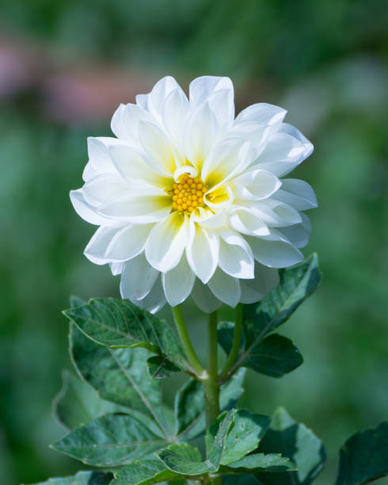
Dahlia flowers are typically grown during the warmer seasons of the year, such as spring and summer. They thrive in sunlight and warmer temperatures, making these seasons ideal for their growth and blooming.
In temperate climates, dahlia tubers can be planted in the spring after the last frost date. They will continue to grow and produce flowers throughout the summer months until the first frost in the fall.
In warmer climates or regions with mild winters, dahlias may also be grown as perennials, blooming from spring to fall and sometimes even into early winter.Dahlia flowers are cultivated and sold in various states across India, but some regions are known for their significant production and market share. States with suitable climatic conditions, strong horticultural industries, and higher demand for ornamental plants often cultivate and sell more dahlias.
States like Karnataka, Maharashtra, Tamil Nadu, Andhra Pradesh, Gujarat, and West Bengal are among the leading producers of dahlias in India. These states have favorable climates for dahlia cultivation and have well-established floriculture sectors.
Dahlias require soil that drains well to prevent waterlogging, which can lead to root rot. Sandy loam or loamy soil with good drainage is ideal for dahlia cultivation. Avoid heavy clay soils that retain water.
The optimal soil pH for dahlias is between 6.0 to 7.0, slightly acidic to neutral. This pH range promotes better nutrient availability and uptake for healthy growth and flowering.
Dahlias thrive in fertile soil enriched with organic matter. Incorporating compost, well-rotted manure, or other organic amendments into the soil before planting can improve soil fertility and provide essential nutrients.
Overall, from planting tubers to full bloom, it can take approximately 10 to 16 weeks for dahlias to grow and produce flowers. Providing optimal growing conditions, such as adequate sunlight, water, and fertilizer, can help expedite the growth process and ensure healthy, vibrant blooms.
డాలియా పువ్వులు సాధారణంగా వసంత మరియు వేసవి వంటి సంవత్సరంలో వెచ్చని సీజన్లలో పెరుగుతాయి. ఇవి సూర్యరశ్మి మరియు వెచ్చని ఉష్ణోగ్రతలలో వృద్ధి చెందుతాయి, ఈ సీజన్లను వాటి పెరుగుదలకు మరియు వికసించడానికి అనువైనదిగా చేస్తుంది.
సమశీతోష్ణ వాతావరణంలో, చివరి మంచు తేదీ తర్వాత వసంతకాలంలో డహ్లియా దుంపలను నాటవచ్చు. శరదృతువులో మొదటి మంచు వరకు వేసవి నెలల్లో అవి పెరుగుతూ మరియు పుష్పాలను ఉత్పత్తి చేస్తాయి.
వెచ్చని వాతావరణంలో లేదా తేలికపాటి చలికాలం ఉన్న ప్రాంతాలలో, డాలియా కూడా శాశ్వత మొక్కలుగా పెరుగుతాయి, వసంతకాలం నుండి శరదృతువు వరకు మరియు కొన్నిసార్లు శీతాకాలం ప్రారంభంలో కూడా వికసిస్తాయి. భారతదేశం అంతటా వివిధ రాష్ట్రాల్లో డహ్లియా పువ్వులు సాగు మరియు విక్రయించబడతాయి, అయితే కొన్ని ప్రాంతాలు వాటి గణనీయమైన ఉత్పత్తికి ప్రసిద్ధి చెందాయి. మరియు మార్కెట్ వాటా. అనుకూలమైన వాతావరణ పరిస్థితులు, బలమైన ఉద్యాన పరిశ్రమలు మరియు అలంకార మొక్కలకు అధిక డిమాండ్ ఉన్న రాష్ట్రాలు తరచుగా ఎక్కువ డహ్లియాలను పండించి విక్రయిస్తాయి.
కర్నాటక, మహారాష్ట్ర, తమిళనాడు, ఆంధ్రప్రదేశ్, గుజరాత్ మరియు పశ్చిమ బెంగాల్ వంటి రాష్ట్రాలు భారతదేశంలో డహ్లియాల ఉత్పత్తిలో అగ్రగామిగా ఉన్నాయి. ఈ రాష్ట్రాలు డాలియా సాగుకు అనుకూలమైన వాతావరణాన్ని కలిగి ఉన్నాయి మరియు బాగా స్థిరపడిన పూల పెంపకం రంగాలను కలిగి ఉన్నాయి.
డహ్లియాస్కు నీటి ఎద్దడిని నివారించడానికి బాగా ప్రవహించే నేల అవసరం, ఇది రూట్ తెగులుకు దారితీస్తుంది. మంచి పారుదల ఉన్న ఇసుక లోమ్ లేదా లోమీ నేల డహ్లియా సాగుకు అనువైనది. నీటిని నిలుపుకునే భారీ బంకమట్టి నేలలను నివారించండి.
డహ్లియాస్ కోసం సరైన నేల pH 6.0 నుండి 7.0 మధ్య ఉంటుంది, కొద్దిగా ఆమ్లం నుండి తటస్థంగా ఉంటుంది. ఈ pH పరిధి మంచి పోషకాల లభ్యతను ప్రోత్సహిస్తుంది మరియు ఆరోగ్యకరమైన పెరుగుదల మరియు పుష్పించేలా చేస్తుంది.
సేంద్రీయ పదార్థంతో సమృద్ధిగా ఉన్న సారవంతమైన నేలలో డహ్లియాస్ వృద్ధి చెందుతాయి. నాటడానికి ముందు కంపోస్ట్, బాగా కుళ్ళిన ఎరువు లేదా ఇతర సేంద్రీయ సవరణలను మట్టిలో చేర్చడం వల్ల నేల సంతానోత్పత్తి మెరుగుపడుతుంది మరియు అవసరమైన పోషకాలను అందిస్తుంది.
మొత్తంమీద, దుంపలను నాటడం నుండి పూర్తిగా వికసించే వరకు, డహ్లియాస్ పెరగడానికి మరియు పుష్పాలను ఉత్పత్తి చేయడానికి సుమారు 10 నుండి 16 వారాలు పడుతుంది. తగినంత సూర్యరశ్మి, నీరు మరియు ఎరువులు వంటి సరైన పెరుగుతున్న పరిస్థితులను అందించడం, వృద్ధి ప్రక్రియను వేగవంతం చేయడంలో మరియు ఆరోగ్యకరమైన, శక్తివంతమైన పుష్పాలను నిర్ధారించడంలో సహాయపడుతుంది.
23. LILY OF THE VALLEY / 23.లోయ యొక్క లిల్లీ
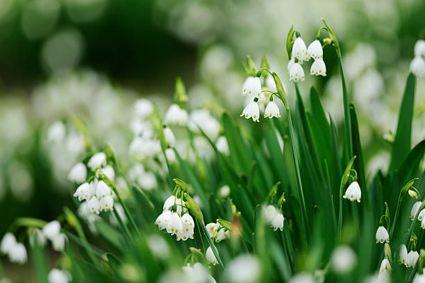
Lily of the valley flowers are typically grown during the spring season. They are known for their delicate, bell-shaped blooms and are often associated with the freshness and renewal of springtime.
Lily of the valley flowers prefer cool temperatures and thrive in moist, shaded areas. In temperate climates, they are usually planted in early spring or late winter, depending on the local climate and frost dates. They will continue to grow and bloom throughout the spring months, typically from April to June, depending on the specific region and weather conditions.
In India, lily of the valley flowers (Convallaria majalis) are not commonly cultivated on a large scale for commercial purposes. They are not native to India and are more commonly found in temperate regions of the Northern Hemisphere.
Lily of the valley plants require soil that drains well to prevent waterlogging, which can lead to root rot. Sandy loam or loamy soil with good drainage is ideal for lily of the valley cultivation.
The optimal soil pH for lily of the valley flowers is between 5.5 to 7.0, slightly acidic to neutral. This pH range promotes better nutrient availability and uptake for healthy growth and flowering.
Overall, from planting bulbs to full bloom, it can take approximately 10 to 16 weeks for lily of the valley flowers to grow completely, depending on various factors such as temperature, sunlight, soil conditions, and care provided. Providing optimal growing conditions, such as shade, well-drained soil, and adequate moisture, can help expedite the growth process and encourage healthy flowering.
లిల్లీ ఆఫ్ ది వ్యాలీ పువ్వులు సాధారణంగా వసంత కాలంలో పెరుగుతాయి. అవి సున్నితమైన, బెల్ ఆకారపు పుష్పాలకు ప్రసిద్ధి చెందాయి మరియు తరచుగా వసంతకాలం యొక్క తాజాదనం మరియు పునరుద్ధరణతో సంబంధం కలిగి ఉంటాయి.
లోయ యొక్క లిల్లీ పువ్వులు చల్లని ఉష్ణోగ్రతలను ఇష్టపడతాయి మరియు తేమ, నీడ ఉన్న ప్రదేశాలలో వృద్ధి చెందుతాయి. సమశీతోష్ణ వాతావరణంలో, వారు సాధారణంగా స్థానిక వాతావరణం మరియు మంచు తేదీలను బట్టి వసంత ఋతువులో లేదా శీతాకాలం చివరిలో పండిస్తారు. అవి నిర్దిష్ట ప్రాంతం మరియు వాతావరణ పరిస్థితులపై ఆధారపడి సాధారణంగా ఏప్రిల్ నుండి జూన్ వరకు వసంత నెలల అంతటా పెరుగుతాయి మరియు వికసిస్తాయి.
భారతదేశంలో, లిల్లీ ఆఫ్ ది వ్యాలీ పువ్వులు (కాన్వల్లారియా మజలిస్) సాధారణంగా వాణిజ్య ప్రయోజనాల కోసం పెద్ద ఎత్తున సాగు చేయబడవు. ఇవి భారతదేశానికి చెందినవి కావు మరియు ఉత్తర అర్ధగోళంలోని సమశీతోష్ణ ప్రాంతాలలో సాధారణంగా కనిపిస్తాయి.
లోయ మొక్కల లిల్లీకి నీటి ఎద్దడిని నివారించడానికి బాగా ప్రవహించే నేల అవసరం, ఇది రూట్ తెగులుకు దారితీస్తుంది. మంచి పారుదల ఉన్న ఇసుక లోమీ లేదా లోమీ నేల లిల్లీ ఆఫ్ ది వ్యాలీ సాగుకు అనువైనది.
లోయ పువ్వుల కోసం సరైన నేల pH 5.5 నుండి 7.0 మధ్య ఉంటుంది, కొద్దిగా ఆమ్లం నుండి తటస్థంగా ఉంటుంది. ఈ pH పరిధి మంచి పోషకాల లభ్యతను ప్రోత్సహిస్తుంది మరియు ఆరోగ్యకరమైన పెరుగుదల మరియు పుష్పించేలా చేస్తుంది.
మొత్తంమీద, గడ్డలు నాటడం నుండి పూర్తిగా వికసించే వరకు, ఉష్ణోగ్రత, సూర్యకాంతి, నేల పరిస్థితులు మరియు అందించిన సంరక్షణ వంటి వివిధ కారకాలపై ఆధారపడి, లోయలోని లిల్లీ పువ్వులు పూర్తిగా పెరగడానికి సుమారు 10 నుండి 16 వారాలు పడుతుంది. నీడ, బాగా ఎండిపోయిన నేల మరియు తగినంత తేమ వంటి సరైన పెరుగుతున్న పరిస్థితులను అందించడం, వృద్ధి ప్రక్రియను వేగవంతం చేయడంలో మరియు ఆరోగ్యకరమైన పుష్పించేలా ప్రోత్సహించడంలో సహాయపడుతుంది.
24. SWEETPEA / 24.స్వీట్ పీ ఫ్లవర్
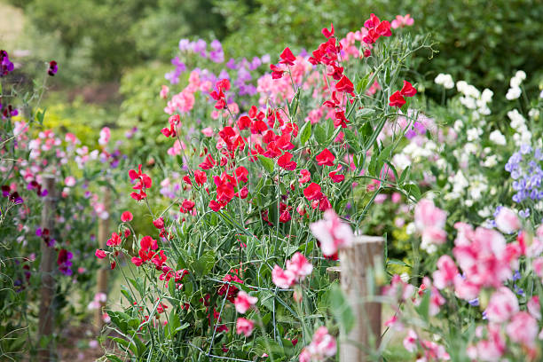
Sweet peas (Lathyrus odoratus) are typically grown during the cool seasons of spring and fall. These flowers prefer cooler temperatures and can struggle in hot summer weather.
Regardless of the planting season, sweet peas thrive in cooler temperatures. They prefer daytime temperatures between 50°F to 75°F (10°C to 24°C) for optimal growth and flowering.
Sweet peas (Lathyrus odoratus) are popular ornamental flowers grown and sold in various states across India. While specific market share and cultivation data may vary, certain regions are known for their significant production and demand for sweet peas.
States like Karnataka, Maharashtra, Tamil Nadu, Andhra Pradesh, Gujarat, and West Bengal are among the leading producers and consumers of ornamental flowers, including sweet peas, in India. These states have favorable climates, strong horticultural industries, and higher demand for flowers for both domestic and commercial purposes.
Sweet peas prefer soil that drains well to prevent waterlogging, which can lead to root rot. Sandy loam or loamy soil with good drainage is ideal for sweet pea cultivation.
The optimal soil pH for sweet peas is between 6.0 to 7.0, slightly acidic to neutral. This pH range promotes better nutrient availability and uptake for healthy growth and flowering.
Overall, from sowing seeds to full bloom and peak flowering, it can take approximately 10 to 16 weeks for sweet peas to grow completely, depending on various factors. Providing optimal growing conditions, such as adequate sunlight, water, and support for climbing, can help expedite the growth process and ensure healthy, vibrant blooms.
తీపి బఠానీలు (లాథైరస్ ఒడోరాటస్) సాధారణంగా వసంత మరియు శరదృతువు యొక్క చల్లని సీజన్లలో పెరుగుతాయి. ఈ పువ్వులు చల్లని ఉష్ణోగ్రతలను ఇష్టపడతాయి మరియు వేడి వేసవి వాతావరణంలో కష్టపడతాయి.
నాటడం కాలంతో సంబంధం లేకుండా, తీపి బఠానీలు చల్లని ఉష్ణోగ్రతలలో వృద్ధి చెందుతాయి. వారు సరైన పెరుగుదల మరియు పుష్పించే కోసం 50°F నుండి 75°F (10°C నుండి 24°C) మధ్య పగటి ఉష్ణోగ్రతలను ఇష్టపడతారు.
స్వీట్ బఠానీలు (లాథైరస్ ఒడోరాటస్) భారతదేశంలోని వివిధ రాష్ట్రాలలో పండించే మరియు విక్రయించబడుతున్న ప్రసిద్ధ అలంకారమైన పువ్వులు. నిర్దిష్ట మార్కెట్ వాటా మరియు సాగు డేటా మారవచ్చు, కొన్ని ప్రాంతాలు తీపి బఠానీలకు గణనీయమైన ఉత్పత్తి మరియు డిమాండ్కు ప్రసిద్ధి చెందాయి.
కర్నాటక, మహారాష్ట్ర, తమిళనాడు, ఆంధ్రప్రదేశ్, గుజరాత్ మరియు పశ్చిమ బెంగాల్ వంటి రాష్ట్రాలు భారతదేశంలో తీపి బఠానీలతో సహా అలంకారమైన పువ్వుల ఉత్పత్తి మరియు వినియోగదారులలో అగ్రగామిగా ఉన్నాయి. ఈ రాష్ట్రాలు అనుకూలమైన వాతావరణాలు, బలమైన ఉద్యాన పరిశ్రమలు మరియు గృహ మరియు వాణిజ్య ప్రయోజనాల కోసం పూల కోసం అధిక డిమాండ్ను కలిగి ఉన్నాయి.
తీపి బఠానీలు నీటి ఎద్దడిని నివారించడానికి బాగా ప్రవహించే మట్టిని ఇష్టపడతాయి, ఇది రూట్ తెగులుకు దారితీస్తుంది. మంచి పారుదల ఉన్న ఇసుక లోమ్ లేదా లోమీ నేల తీపి బఠానీ సాగుకు అనువైనది.
తీపి బఠానీలకు సరైన నేల pH 6.0 నుండి 7.0 మధ్య ఉంటుంది, కొద్దిగా ఆమ్లం నుండి తటస్థంగా ఉంటుంది. ఈ pH పరిధి మంచి పోషకాల లభ్యతను ప్రోత్సహిస్తుంది మరియు ఆరోగ్యకరమైన పెరుగుదల మరియు పుష్పించేలా చేస్తుంది.
మొత్తంమీద, విత్తనాలు విత్తడం నుండి పూర్తిగా వికసించే వరకు మరియు గరిష్టంగా పుష్పించే వరకు, వివిధ కారకాలపై ఆధారపడి తీపి బఠానీలు పూర్తిగా పెరగడానికి సుమారు 10 నుండి 16 వారాలు పడుతుంది. తగినంత సూర్యరశ్మి, నీరు మరియు అధిరోహణకు మద్దతు వంటి సరైన పెరుగుతున్న పరిస్థితులను అందించడం, వృద్ధి ప్రక్రియను వేగవంతం చేయడంలో మరియు ఆరోగ్యకరమైన, శక్తివంతమైన పుష్పాలను నిర్ధారించడంలో సహాయపడుతుంది.
25. HYDRANGEA / 25.హైడ్రేంజ
Hydrangea flowers are typically grown during the spring and summer seasons. These plants prefer moderate temperatures and thrive in climates where they can receive adequate sunlight without extreme heat.
Hydrangea flowers are popular ornamental plants grown and sold in various states across India. While specific market share and cultivation data may vary, certain regions are known for their significant production and demand for hydrangeas.
States like Karnataka, Maharashtra, Tamil Nadu, Andhra Pradesh, Gujarat, West Bengal, and Kerala are among the leading producers and consumers of ornamental plants, including hydrangeas, in India. These states have favorable climates, strong horticultural industries, and higher demand for flowers for both domestic and commercial purposes.
Hydrangeas do not like waterlogged soil, so it's crucial to plant them in soil that drains well. Sandy loam or loamy soil with good drainage is ideal for hydrangeas.
Hydrangeas prefer slightly acidic to neutral soil with a pH range of about 5.5 to 7.0. Soil pH can affect the flower color of some hydrangea varieties, with acidic soil producing blue flowers and alkaline soil producing pink flowers. You can adjust the soil pH by adding amendments like sulfur for more acidic soil or lime for more alkaline soil.
Overall, from planting to full bloom, it may take approximately 1 to 2 years for hydrangeas to reach their full size and potential in terms of blooming. However, they can start producing flowers within the first growing season after planting, especially if they are well-established and provided with optimal growing conditions.
హైడ్రేంజ పువ్వులు సాధారణంగా వసంత మరియు వేసవి కాలంలో పెరుగుతాయి. ఈ మొక్కలు మితమైన ఉష్ణోగ్రతలను ఇష్టపడతాయి మరియు విపరీతమైన వేడి లేకుండా తగినంత సూర్యరశ్మిని పొందగల వాతావరణాలలో వృద్ధి చెందుతాయి.
హైడ్రేంజ పువ్వులు ప్రసిద్ధ అలంకారమైన మొక్కలు మరియు భారతదేశంలోని వివిధ రాష్ట్రాల్లో అమ్ముతారు. నిర్దిష్ట మార్కెట్ వాటా మరియు సాగు డేటా మారవచ్చు, కొన్ని ప్రాంతాలు వాటి గణనీయమైన ఉత్పత్తి మరియు హైడ్రేంజాల డిమాండ్కు ప్రసిద్ధి చెందాయి.
కర్నాటక, మహారాష్ట్ర, తమిళనాడు, ఆంధ్రప్రదేశ్, గుజరాత్, పశ్చిమ బెంగాల్ మరియు కేరళ వంటి రాష్ట్రాలు భారతదేశంలో హైడ్రేంజస్తో సహా అలంకార మొక్కల ఉత్పత్తి మరియు వినియోగదారులలో అగ్రగామిగా ఉన్నాయి. ఈ రాష్ట్రాలు అనుకూలమైన వాతావరణాలు, బలమైన ఉద్యాన పరిశ్రమలు మరియు గృహ మరియు వాణిజ్య ప్రయోజనాల కోసం పూల కోసం అధిక డిమాండ్ను కలిగి ఉన్నాయి.
హైడ్రేంజాలు నీటితో నిండిన మట్టిని ఇష్టపడవు, కాబట్టి వాటిని బాగా ఎండిపోయే మట్టిలో నాటడం చాలా ముఖ్యం. మంచి పారుదల ఉన్న ఇసుక లోవామ్ లేదా లోమీ నేల హైడ్రేంజాలకు అనువైనది.
హైడ్రేంజాలు 5.5 నుండి 7.0 pH పరిధితో తటస్థ మట్టికి కొద్దిగా ఆమ్లాన్ని ఇష్టపడతాయి. నేల pH కొన్ని హైడ్రేంజ రకాల పువ్వుల రంగును ప్రభావితం చేస్తుంది, ఆమ్ల నేల నీలం పువ్వులను మరియు ఆల్కలీన్ నేల గులాబీ పువ్వులను ఉత్పత్తి చేస్తుంది. మీరు ఎక్కువ ఆమ్ల నేల కోసం సల్ఫర్ లేదా ఎక్కువ ఆల్కలీన్ నేల కోసం సున్నం వంటి సవరణలను జోడించడం ద్వారా నేల pHని సర్దుబాటు చేయవచ్చు.
మొత్తంగా, నాటడం నుండి పూర్తిగా వికసించే వరకు, హైడ్రేంజాలు వాటి పూర్తి పరిమాణాన్ని మరియు వికసించే సామర్థ్యాన్ని చేరుకోవడానికి సుమారు 1 నుండి 2 సంవత్సరాలు పట్టవచ్చు. అయినప్పటికీ, వారు నాటడం తర్వాత మొదటి పెరుగుతున్న కాలంలో పుష్పాలను ఉత్పత్తి చేయడం ప్రారంభించవచ్చు, ప్రత్యేకించి అవి బాగా స్థిరపడి మరియు సరైన పెరుగుతున్న పరిస్థితులను అందించినట్లయితే.
26. BOUGAINVILLEA/ 26.కాగితంపూలు
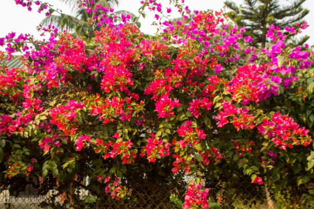
Bougainvillea flowers are typically grown during the warm seasons of spring and summer. These plants thrive in tropical and subtropical climates and are known for their vibrant, colorful bracts that surround small, inconspicuous flowers
Bougainvillea plants are popular ornamental plants grown and sold in various states across India. While specific market share and cultivation data may vary, certain regions are known for their significant production and demand for bougainvilleas.
States like Karnataka, Maharashtra, Tamil Nadu, Andhra Pradesh, Gujarat, Kerala, and West Bengal are among the leading producers and consumers of ornamental plants, including bougainvilleas, in India. These states have favorable climates, strong horticultural industries, and higher demand for flowers for both domestic and commercial purposes.
Bougainvilleas do not tolerate waterlogged soil, so it's crucial to plant them in soil that drains well. Sandy loam or loamy soil with good drainage is ideal for bougainvillea cultivation.
The optimal soil pH for bougainvilleas is between 5.5 to 7.0, slightly acidic to neutral. This pH range promotes better nutrient availability and uptake for healthy growth and blooming.
Incorporating organic matter into the soil, such as compost, well-rotted manure, or peat moss, helps improve soil structure, fertility, and moisture retention. Bougainvilleas benefit from nutrient-rich soil, so amending the soil with organic matter before planting is beneficial.
Overall, bougainvilleas can start blooming within the first year of planting, but they may take 1 to 2 years or more to reach their full size and potential in terms of blooming. Consistent care and maintenance will help them thrive and produce vibrant displays of color season after season.
బౌగెన్విల్లా పువ్వులు సాధారణంగా వసంత ఋతువు మరియు వేసవిలో వెచ్చని సీజన్లలో పెరుగుతాయి. ఈ మొక్కలు ఉష్ణమండల మరియు ఉపఉష్ణమండల శీతోష్ణస్థితిలో వృద్ధి చెందుతాయి మరియు చిన్న, అస్పష్టమైన పువ్వుల చుట్టూ ఉండే శక్తివంతమైన, రంగురంగుల కవచాలకు ప్రసిద్ధి చెందాయి.
బౌగెన్విల్లా మొక్కలు భారతదేశంలోని వివిధ రాష్ట్రాలలో పెరిగిన మరియు విక్రయించబడుతున్న ప్రసిద్ధ అలంకారమైన మొక్కలు. నిర్దిష్ట మార్కెట్ వాటా మరియు సాగు డేటా మారవచ్చు, కొన్ని ప్రాంతాలు వాటి గణనీయమైన ఉత్పత్తి మరియు బౌగెన్విల్లెల డిమాండ్కు ప్రసిద్ధి చెందాయి.
కర్నాటక, మహారాష్ట్ర, తమిళనాడు, ఆంధ్రప్రదేశ్, గుజరాత్, కేరళ మరియు పశ్చిమ బెంగాల్ వంటి రాష్ట్రాలు భారతదేశంలో బోగెన్విల్లాస్తో సహా అలంకారమైన మొక్కలను ఉత్పత్తి చేసే మరియు వినియోగదారులలో ప్రముఖంగా ఉన్నాయి. ఈ రాష్ట్రాలు అనుకూలమైన వాతావరణాలు, బలమైన ఉద్యాన పరిశ్రమలు మరియు గృహ మరియు వాణిజ్య ప్రయోజనాల కోసం పూల కోసం అధిక డిమాండ్ను కలిగి ఉన్నాయి.
Bougainvilleas నీటితో నిండిన మట్టిని తట్టుకోలేవు, కాబట్టి వాటిని బాగా ఎండిపోయే మట్టిలో నాటడం చాలా ముఖ్యం. మంచి నీటి పారుదల ఉన్న ఇసుక లోమ్ లేదా లోమీ నేల బోగెన్విల్లా సాగుకు అనువైనది.
బౌగెన్విల్లెస్ కోసం సరైన నేల pH 5.5 నుండి 7.0 వరకు ఉంటుంది, కొద్దిగా ఆమ్లం నుండి తటస్థంగా ఉంటుంది. ఈ pH పరిధి మంచి పోషకాల లభ్యతను ప్రోత్సహిస్తుంది మరియు ఆరోగ్యకరమైన పెరుగుదల మరియు పుష్పించేలా చేస్తుంది.
కంపోస్ట్, బాగా కుళ్ళిన ఎరువు లేదా పీట్ నాచు వంటి సేంద్రియ పదార్థాలను మట్టిలో చేర్చడం, నేల నిర్మాణం, సంతానోత్పత్తి మరియు తేమ నిలుపుదలని మెరుగుపరచడంలో సహాయపడుతుంది. బౌగెన్విల్లెస్ పోషకాలు అధికంగా ఉండే నేల నుండి ప్రయోజనం పొందుతాయి, కాబట్టి నాటడానికి ముందు సేంద్రీయ పదార్థంతో మట్టిని సవరించడం ప్రయోజనకరంగా ఉంటుంది.
మొత్తంమీద, బౌగెన్విల్లాలు నాటిన మొదటి సంవత్సరంలోనే వికసించడం ప్రారంభించవచ్చు, అయితే అవి వాటి పూర్తి పరిమాణాన్ని మరియు వికసించే సామర్థ్యాన్ని చేరుకోవడానికి 1 నుండి 2 సంవత్సరాలు లేదా అంతకంటే ఎక్కువ సమయం పట్టవచ్చు. స్థిరమైన సంరక్షణ మరియు నిర్వహణ వారు అభివృద్ధి చెందడానికి మరియు సీజన్ తర్వాత రంగు సీజన్ యొక్క శక్తివంతమైన ప్రదర్శనలను ఉత్పత్తి చేయడంలో సహాయపడతాయి.
27. MORNING GLORY / 27.ఉదయంకీర్తి పుష్పాలు
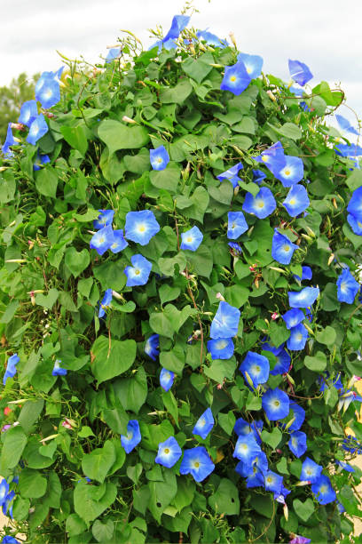
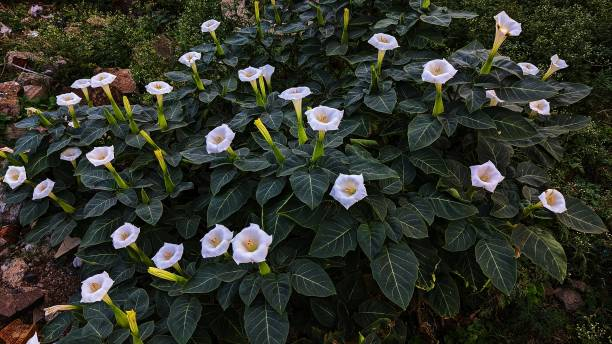
Morning glory flowers are typically grown during the warm seasons of spring and summer. These plants thrive in sunny locations and warm temperatures.
Morning glory flowers are popular ornamental plants grown and sold in various states across India. While specific market share and cultivation data may vary, certain regions are known for their significant production and demand for morning glories.
States like Karnataka, Maharashtra, Tamil Nadu, Andhra Pradesh, Gujarat, West Bengal, Kerala, and Uttar Pradesh are among the leading producers and consumers of ornamental plants, including morning glories, in India. These states have favorable climates, strong horticultural industries, and higher demand for flowers for both domestic and commercial purposes.
Morning glories do not tolerate waterlogged soil, so it's important to plant them in soil that drains well. Sandy loam or loamy soil with good drainage is ideal for morning glory cultivation. Morning glory plants prefer slightly acidic to neutral soil with a pH range of about 6.0 to 7.0. This pH range promotes better nutrient availability and uptake for healthy growth and blooming.
Overall, from sowing seeds to full bloom and continuous flowering, it can take approximately 2 to 4 months for morning glory flowers to grow completely, depending on various factors. Providing optimal growing conditions, such as adequate sunlight, water, and support for climbing, can help expedite the growth process and ensure healthy, vibrant blooms.
మార్నింగ్ గ్లోరీ పువ్వులు సాధారణంగా వసంత మరియు వేసవిలో వెచ్చని సీజన్లలో పెరుగుతాయి. ఈ మొక్కలు ఎండ ప్రదేశాలలో మరియు వెచ్చని ఉష్ణోగ్రతలలో వృద్ధి చెందుతాయి.
మార్నింగ్ గ్లోరీ ఫ్లవర్స్ (Ipomoea spp.) భారతదేశం అంతటా వివిధ రాష్ట్రాల్లో పెరిగిన మరియు విక్రయించబడుతున్న ప్రసిద్ధ అలంకార మొక్కలు. నిర్దిష్ట మార్కెట్ వాటా మరియు సాగు డేటా మారవచ్చు, కొన్ని ప్రాంతాలు వాటి ముఖ్యమైన ఉత్పత్తి మరియు ఉదయం గ్లోరీల డిమాండ్కు ప్రసిద్ధి చెందాయి.
కర్నాటక, మహారాష్ట్ర, తమిళనాడు, ఆంధ్రప్రదేశ్, గుజరాత్, పశ్చిమ బెంగాల్, కేరళ మరియు ఉత్తరప్రదేశ్ వంటి రాష్ట్రాలు భారతదేశంలో మార్నింగ్ గ్లోరీస్తో సహా అలంకారమైన మొక్కల ఉత్పత్తి మరియు వినియోగదారులలో ప్రముఖంగా ఉన్నాయి. ఈ రాష్ట్రాలు అనుకూలమైన వాతావరణాలు, బలమైన ఉద్యాన పరిశ్రమలు మరియు గృహ మరియు వాణిజ్య ప్రయోజనాల కోసం పూల కోసం అధిక డిమాండ్ను కలిగి ఉన్నాయి.
మార్నింగ్ గ్లోరీస్ నీటితో నిండిన మట్టిని తట్టుకోవు, కాబట్టి వాటిని బాగా ప్రవహించే మట్టిలో నాటడం చాలా ముఖ్యం. మంచి పారుదల ఉన్న ఇసుక లోమ్ లేదా లోమీ నేల ఉదయం కీర్తి సాగుకు అనువైనది. మార్నింగ్ గ్లోరీ మొక్కలు 6.0 నుండి 7.0 pH పరిధితో తటస్థ మట్టికి కొద్దిగా ఆమ్లాన్ని ఇష్టపడతాయి. ఈ pH పరిధి మంచి పోషకాల లభ్యతను ప్రోత్సహిస్తుంది మరియు ఆరోగ్యకరమైన పెరుగుదల మరియు పుష్పించేలా చేస్తుంది.
మొత్తమ్మీద, విత్తనాలు విత్తడం నుండి పూర్తిగా వికసించే వరకు మరియు నిరంతరంగా పుష్పించే వరకు, వివిధ కారకాలపై ఆధారపడి, ఉదయం కీర్తి పువ్వులు పూర్తిగా పెరగడానికి సుమారు 2 నుండి 4 నెలల సమయం పడుతుంది. తగినంత సూర్యరశ్మి, నీరు మరియు అధిరోహణకు మద్దతు వంటి సరైన పెరుగుతున్న పరిస్థితులను అందించడం, వృద్ధి ప్రక్రియను వేగవంతం చేయడంలో మరియు ఆరోగ్యకరమైన, శక్తివంతమైన పుష్పాలను నిర్ధారించడంలో సహాయపడుతుంది.
28. GERANIUM / 28.జెరేనియం
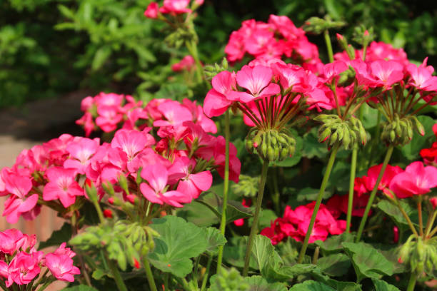
Geranium flowers are typically grown during the warm seasons of spring and summer. These plants thrive in mild to warm climates and prefer temperatures that are not excessively hot or cold.
States like Karnataka, Maharashtra, Tamil Nadu, Andhra Pradesh, Gujarat, Kerala, and West Bengal are among the leading producers and consumers of ornamental plants, including geraniums, in India. These states have favorable climates, strong horticultural industries, and higher demand for flowers for both domestic and commercial purposes.
Geraniums do not tolerate waterlogged soil, so it's important to plant them in soil that drains well. Sandy loam or loamy soil with good drainage is ideal for geranium cultivation.
The optimal soil pH for geraniums is between 6.0 to 7.0, slightly acidic to neutral. This pH range promotes better nutrient availability and uptake for healthy growth and blooming.
Incorporating organic matter into the soil, such as compost, well-rotted manure, or leaf mold, helps improve soil structure, fertility, and moisture retention. Geraniums benefit from nutrient-rich soil, so amending the soil with organic matter before planting is beneficial.
Overall, from seed germination to full blooming and continuous flowering, it can take approximately 3 to 6 months or more for geraniums to grow and bloom completely, depending on various factors. Providing optimal growing conditions, such as adequate sunlight, water, and occasional fertilization, can help expedite the growth process and ensure healthy, vibrant blooms.
జెరేనియం పువ్వులు సాధారణంగా వసంత మరియు వేసవిలో వెచ్చని సీజన్లలో పెరుగుతాయి. ఈ మొక్కలు తేలికపాటి నుండి వెచ్చని వాతావరణంలో వృద్ధి చెందుతాయి మరియు అధిక వేడి లేదా చల్లగా లేని ఉష్ణోగ్రతలను ఇష్టపడతాయి.
కర్నాటక, మహారాష్ట్ర, తమిళనాడు, ఆంధ్రప్రదేశ్, గుజరాత్, కేరళ మరియు పశ్చిమ బెంగాల్ వంటి రాష్ట్రాలు భారతదేశంలో జెరేనియంలతో సహా అలంకారమైన మొక్కల ఉత్పత్తి మరియు వినియోగదారులలో ప్రముఖంగా ఉన్నాయి. ఈ రాష్ట్రాలు అనుకూలమైన వాతావరణాలు, బలమైన ఉద్యాన పరిశ్రమలు మరియు గృహ మరియు వాణిజ్య ప్రయోజనాల కోసం పూల కోసం అధిక డిమాండ్ను కలిగి ఉన్నాయి.
జెరేనియంలు నీటితో నిండిన మట్టిని తట్టుకోవు, కాబట్టి వాటిని బాగా ప్రవహించే మట్టిలో నాటడం చాలా ముఖ్యం. మంచి పారుదల ఉన్న ఇసుక లోమీ లేదా లోమీ నేల జెరేనియం సాగుకు అనువైనది.
జెరేనియంలకు సరైన నేల pH 6.0 నుండి 7.0 మధ్య ఉంటుంది, కొద్దిగా ఆమ్లం నుండి తటస్థంగా ఉంటుంది. ఈ pH పరిధి మంచి పోషకాల లభ్యతను ప్రోత్సహిస్తుంది మరియు ఆరోగ్యకరమైన పెరుగుదల మరియు పుష్పించేలా చేస్తుంది.
కంపోస్ట్, బాగా కుళ్ళిన పేడ లేదా ఆకు అచ్చు వంటి సేంద్రియ పదార్థాలను మట్టిలో చేర్చడం, నేల నిర్మాణం, సంతానోత్పత్తి మరియు తేమ నిలుపుదలని మెరుగుపరచడంలో సహాయపడుతుంది. జెరేనియంలు పోషకాలు అధికంగా ఉండే నేల నుండి ప్రయోజనం పొందుతాయి, కాబట్టి నాటడానికి ముందు సేంద్రీయ పదార్థంతో మట్టిని సవరించడం ప్రయోజనకరంగా ఉంటుంది.
మొత్తంమీద, విత్తనాల అంకురోత్పత్తి నుండి పూర్తిగా వికసించే మరియు నిరంతరంగా పుష్పించే వరకు, వివిధ కారకాలపై ఆధారపడి, జెరేనియంలు పూర్తిగా పెరగడానికి మరియు పూర్తిగా వికసించటానికి సుమారు 3 నుండి 6 నెలలు లేదా అంతకంటే ఎక్కువ సమయం పడుతుంది. తగినంత సూర్యరశ్మి, నీరు మరియు అప్పుడప్పుడు ఫలదీకరణం వంటి సరైన ఎదుగుదల పరిస్థితులను అందించడం, వృద్ధి ప్రక్రియను వేగవంతం చేయడంలో మరియు ఆరోగ్యకరమైన, శక్తివంతమైన పుష్పాలను నిర్ధారించడంలో సహాయపడుతుంది.
29. LAVENDER / 29.లావెండర్ పువ్వులు
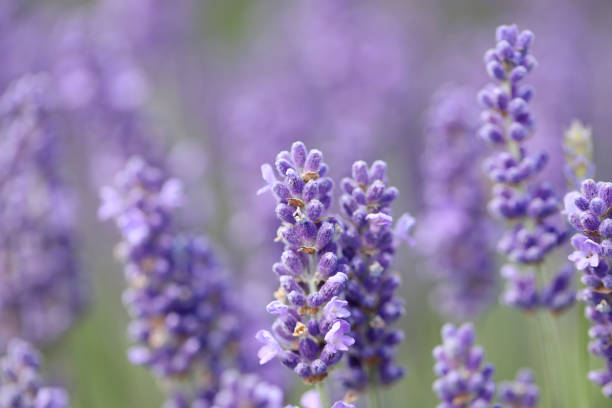
Lavender flowers are typically grown during the warm seasons of spring and summer.States like Karnataka, Maharashtra, Tamil Nadu, Himachal Pradesh, Uttarakhand, and Jammu and Kashmir are among the leading producers and consumers of lavender in India. These states have varying climatic conditions, from temperate to subtropical, which can support lavender cultivation, especially in higher altitude areas or regions with well-drained soil and moderate temperatures.
Lavender plants do not tolerate waterlogged or overly moist soil. They thrive in well-draining soil that allows excess water to drain away quickly. Sandy or loamy soil with good drainage is ideal for lavender cultivation. Lavender prefers soil with a pH level between 6.5 to 8.0, slightly alkaline to neutral. Soil that is too acidic may hinder the growth of lavender plants. It's important to test the soil pH and amend it if necessary to ensure optimal growing conditions for lavender.
Lavender plants prefer soil with a sandy or loamy texture. These soil types provide good drainage and allow air to reach the plant's roots, promoting healthy growth. Avoid heavy clay soils that can retain water and lead to root rot in lavender plants.
While lavender plants are not heavy feeders, incorporating some organic matter into the soil can improve soil structure and fertility. Adding well-rotted compost or aged manure to the planting area before planting can help improve soil quality.
Overall, from seed germination to full maturity and continuous blooming, it can take approximately 2 to 3 years or more for lavender plants to grow completely, depending on various factors. Providing optimal growing conditions, such as well-draining soil, adequate sunlight, and occasional pruning, can help expedite the growth process and ensure healthy, vibrant lavender plants.
లావెండర్ పువ్వులు సాధారణంగా వసంత ఋతువు మరియు వేసవిలో వెచ్చని సీజన్లలో పెరుగుతాయి. కర్నాటక, మహారాష్ట్ర, తమిళనాడు, హిమాచల్ ప్రదేశ్, ఉత్తరాఖండ్ మరియు జమ్మూ మరియు కాశ్మీర్ వంటి రాష్ట్రాలు భారతదేశంలో లావెండర్ యొక్క ప్రముఖ ఉత్పత్తిదారులు మరియు వినియోగదారులలో ఉన్నాయి. ఈ రాష్ట్రాలు సమశీతోష్ణ నుండి ఉపఉష్ణమండల వరకు వివిధ వాతావరణ పరిస్థితులను కలిగి ఉంటాయి, ఇవి లావెండర్ సాగుకు మద్దతునిస్తాయి, ముఖ్యంగా అధిక ఎత్తులో ఉన్న ప్రాంతాలు లేదా బాగా ఎండిపోయిన నేల మరియు మధ్యస్థ ఉష్ణోగ్రతలు ఉన్న ప్రాంతాలలో.
లావెండర్ మొక్కలు నీటితో నిండిన లేదా అధిక తేమతో కూడిన మట్టిని తట్టుకోవు. అవి బాగా ఎండిపోయే మట్టిలో వృద్ధి చెందుతాయి, తద్వారా అదనపు నీరు త్వరగా పారుతుంది. మంచి పారుదల ఉన్న ఇసుక లేదా లోమీ నేల లావెండర్ సాగుకు అనువైనది. లావెండర్ 6.5 నుండి 8.0 మధ్య pH స్థాయి, కొద్దిగా ఆల్కలీన్ నుండి తటస్థంగా ఉండే మట్టిని ఇష్టపడుతుంది. చాలా ఆమ్లత్వం ఉన్న నేల లావెండర్ మొక్కల పెరుగుదలకు ఆటంకం కలిగిస్తుంది. లావెండర్ కోసం సరైన పెరుగుతున్న పరిస్థితులను నిర్ధారించడానికి నేల pHని పరీక్షించడం మరియు అవసరమైతే దాన్ని సవరించడం చాలా ముఖ్యం.
లావెండర్ మొక్కలు ఇసుక లేదా లోమీ ఆకృతితో మట్టిని ఇష్టపడతాయి. ఈ నేల రకాలు మంచి పారుదలని అందిస్తాయి మరియు మొక్క యొక్క మూలాలకు గాలి చేరేలా చేస్తాయి, ఆరోగ్యకరమైన పెరుగుదలను ప్రోత్సహిస్తాయి. నీటిని నిలుపుకునే మరియు లావెండర్ మొక్కలలో వేరు తెగులుకు దారితీసే భారీ బంకమట్టి నేలలను నివారించండి.
లావెండర్ మొక్కలు భారీ ఫీడర్లు కానప్పటికీ, మట్టిలో కొంత సేంద్రియ పదార్థాన్ని చేర్చడం వల్ల నేల నిర్మాణం మరియు సంతానోత్పత్తి మెరుగుపడుతుంది. నాటడానికి ముందు బాగా కుళ్ళిన కంపోస్ట్ లేదా వృద్ధాప్య ఎరువును నాటడం ప్రదేశంలో కలపడం నేల నాణ్యతను మెరుగుపరచడంలో సహాయపడుతుంది.
మొత్తంమీద, విత్తనాల అంకురోత్పత్తి నుండి పూర్తి పరిపక్వత మరియు నిరంతర పుష్పించే వరకు, వివిధ కారకాలపై ఆధారపడి లావెండర్ మొక్కలు పూర్తిగా పెరగడానికి సుమారు 2 నుండి 3 సంవత్సరాలు లేదా అంతకంటే ఎక్కువ సమయం పడుతుంది. బాగా ఎండిపోయే నేల, తగినంత సూర్యకాంతి మరియు అప్పుడప్పుడు కత్తిరింపు వంటి సరైన పెరుగుతున్న పరిస్థితులను అందించడం, వృద్ధి ప్రక్రియను వేగవంతం చేయడంలో మరియు ఆరోగ్యకరమైన, శక్తివంతమైన లావెండర్ మొక్కలను నిర్ధారించడంలో సహాయపడుతుంది.
30. BLUEBELL / 30.బ్లూబెల్ ఫ్లవర్
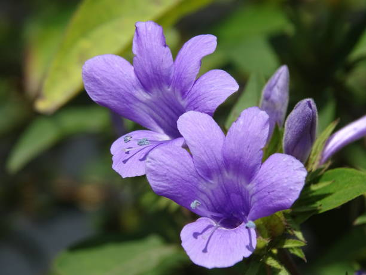
Bluebell flowers , also known as English bluebells or wood hyacinths, are typically grown during the spring season.
Bluebells are more commonly enjoyed in their natural settings or as garden plants in home landscapes rather than being sold in markets or cultivated on a large scale for commercial purposes. As such, they do not have a significant market share in terms of commercial production or sales.
Bluebells thrive in soil that retains moisture well, especially during their active growth and blooming periods in the spring. However, they do not tolerate waterlogged conditions, so the soil should also have good drainage to prevent waterlogging.
While bluebells like moist soil, it's crucial that the soil also has good drainage to prevent water from pooling around the bulbs. Sandy loam or loamy soil with a slightly acidic to neutral pH is ideal for bluebells.
Incorporating organic matter such as compost, well-rotted manure, or leaf mold into the soil before planting can improve soil structure, fertility, and moisture retention. Organic matter also provides essential nutrients for healthy growth and blooming.
Bluebell flowers typically take about 3 to 4 years from planting to reach their full blooming potential.
బ్లూబెల్ పువ్వులు, ఇంగ్లీష్ బ్లూబెల్స్ లేదా వుడ్ హైసింత్స్ అని కూడా పిలుస్తారు, ఇవి సాధారణంగా వసంతకాలంలో పెరుగుతాయి.
బ్లూబెల్లను మార్కెట్లలో విక్రయించడం లేదా వాణిజ్య ప్రయోజనాల కోసం పెద్ద ఎత్తున సాగు చేయడం కంటే వాటి సహజ అమరికలలో లేదా ఇంటి ప్రకృతి దృశ్యాలలో తోట మొక్కలుగా ఎక్కువగా ఆనందిస్తారు. అందువల్ల, వాణిజ్య ఉత్పత్తి లేదా అమ్మకాల పరంగా వారికి గణనీయమైన మార్కెట్ వాటా లేదు.
బ్లూబెల్స్ తేమను బాగా నిలుపుకునే మట్టిలో వృద్ధి చెందుతాయి, ముఖ్యంగా వసంతకాలంలో వాటి క్రియాశీల పెరుగుదల మరియు పుష్పించే కాలంలో. అయినప్పటికీ, వారు నీటితో నిండిన పరిస్థితులను తట్టుకోలేరు, కాబట్టి నీటి ఎద్దడిని నివారించడానికి నేల కూడా మంచి పారుదలని కలిగి ఉండాలి.
బ్లూబెల్స్ తేమతో కూడిన మట్టిని ఇష్టపడుతున్నప్పటికీ, బల్బుల చుట్టూ నీరు చేరకుండా నిరోధించడానికి నేల మంచి పారుదలని కలిగి ఉండటం చాలా ముఖ్యం. ఇసుక లోవామ్ లేదా లోమీ నేల కొద్దిగా ఆమ్లం నుండి తటస్థ pH వరకు బ్లూబెల్స్కు అనువైనది.
నాటడానికి ముందు కంపోస్ట్, బాగా కుళ్ళిన పేడ లేదా ఆకు అచ్చు వంటి సేంద్రియ పదార్థాలను మట్టిలో చేర్చడం వల్ల నేల నిర్మాణం, సంతానోత్పత్తి మరియు తేమ నిలుపుదల మెరుగుపడతాయి. సేంద్రీయ పదార్థం ఆరోగ్యకరమైన పెరుగుదల మరియు పుష్పించేలా అవసరమైన పోషకాలను కూడా అందిస్తుంది.
బ్లూబెల్ పువ్వులు సాధారణంగా వాటి పూర్తి వికసించే సామర్థ్యాన్ని చేరుకోవడానికి నాటడం నుండి 3 నుండి 4 సంవత్సరాలు పడుతుంది.
31. CAMELLIA / 31.కామెల్లియా పువ్వు
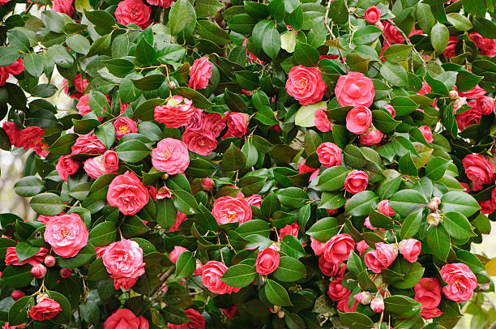
Camellia flowers are typically grown and bloom during the late fall to early spring months, depending on the specific variety and climate.States with favorable climates for growing camellias, such as Karnataka, Maharashtra, Tamil Nadu, Kerala, and West Bengal, may have a higher prevalence of camellia cultivation among gardening enthusiasts, landscapers, and horticultural institutions.
These states often have suitable conditions, including mild winters, well-draining soil, and adequate moisture, that are conducive to camellia growth.Camellias thrive in soil with a pH level between 5.0 to 6.5, which is slightly acidic to moderately acidic. Soil that is too alkaline can lead to nutrient deficiencies in camellia plants, affecting their growth and blooming.
Camellias do not tolerate waterlogged or soggy soil. They prefer soil that drains well to prevent root rot and other water-related issues. Sandy loam or loamy soil with good drainage is ideal for camellias.
Incorporating organic matter such as compost, peat moss, or well-rotted leaf litter into the soil before planting can improve soil texture, fertility, and moisture retention. Organic matter also provides essential nutrients for healthy camellia growth and blooming.
Camellia plants typically take several years to reach their full maturity and blooming potential.
కామెల్లియా పువ్వులు సాధారణంగా శరదృతువు చివరి నుండి వసంత ఋతువు ప్రారంభంలో కొన్ని రకాల మరియు వాతావరణాన్ని బట్టి పెరుగుతాయి మరియు వికసిస్తాయి. కర్నాటక, మహారాష్ట్ర, తమిళనాడు, కేరళ మరియు పశ్చిమ బెంగాల్ వంటి కామెల్లియాలను పెంచడానికి అనుకూలమైన వాతావరణం ఉన్న రాష్ట్రాలు కలిగి ఉండవచ్చు. తోటపని ఔత్సాహికులు, ల్యాండ్స్కేపర్లు మరియు ఉద్యానవన సంస్థలలో కామెల్లియా సాగు యొక్క అధిక ప్రాబల్యం.
ఈ రాష్ట్రాలు తరచుగా తేలికపాటి శీతాకాలాలు, బాగా ఎండిపోయే నేల మరియు తగినంత తేమతో సహా అనుకూలమైన పరిస్థితులను కలిగి ఉంటాయి, ఇవి కామెల్లియా పెరుగుదలకు అనుకూలంగా ఉంటాయి. కామెల్లియాస్ మట్టిలో 5.0 నుండి 6.5 మధ్య pH స్థాయిని కలిగి ఉంటుంది, ఇది కొద్దిగా ఆమ్లం నుండి మధ్యస్తంగా ఆమ్లంగా ఉంటుంది. చాలా ఆల్కలీన్ ఉన్న నేల కామెల్లియా మొక్కలలో పోషక లోపాలకు దారితీస్తుంది, వాటి పెరుగుదల మరియు పుష్పించేలా ప్రభావితం చేస్తుంది.
కామెల్లియాస్ నీటితో నిండిన లేదా తడిగా ఉన్న మట్టిని సహించవు. రూట్ రాట్ మరియు ఇతర నీటి సంబంధిత సమస్యలను నివారించడానికి వారు బాగా ఎండిపోయే మట్టిని ఇష్టపడతారు. మంచి పారుదల ఉన్న ఇసుక లోమ్ లేదా లోమీ నేల కామెల్లియాలకు అనువైనది.
నాటడానికి ముందు కంపోస్ట్, పీట్ నాచు లేదా బాగా కుళ్ళిన ఆకు చెత్త వంటి సేంద్రియ పదార్థాలను మట్టిలో చేర్చడం వల్ల నేల ఆకృతి, సంతానోత్పత్తి మరియు తేమ నిలుపుదల మెరుగుపడతాయి. సేంద్రీయ పదార్థం ఆరోగ్యకరమైన కామెల్లియా పెరుగుదల మరియు వికసించడం కోసం అవసరమైన పోషకాలను కూడా అందిస్తుంది.
కామెల్లియా మొక్కలు వాటి పూర్తి పరిపక్వత మరియు పుష్పించే సామర్థ్యాన్ని చేరుకోవడానికి సాధారణంగా చాలా సంవత్సరాలు పడుతుంది.
32. AZALEA / 32.పూలపొద
Azalea flower are typically grown and bloom during the spring season.States with favorable climates for growing azaleas, such as Karnataka, Maharashtra, Tamil Nadu, Kerala, and West Bengal, may have a higher prevalence of azalea cultivation among gardening enthusiasts, landscapers, and horticultural institutions. These states often have suitable conditions, including mild winters, acidic soil, partial shade, and adequate moisture, that are conducive to azalea growth and blooming.
Azaleas prefer soil with a pH level between 4.5 to 6.0, which is acidic to slightly acidic. Soil that is too alkaline can lead to nutrient deficiencies in azalea plants, affecting their growth and blooming.
Azaleas do not tolerate waterlogged or poorly draining soil. They prefer soil that drains well to prevent water from pooling around the roots, which can cause root rot and other issues. Sandy loam or loamy soil with good drainage is ideal for azaleas.
Incorporating organic matter such as compost, peat moss, or well-rotted leaf litter into the soil before planting can improve soil structure, fertility, and moisture retention. Organic matter also provides essential nutrients for healthy azalea growth and blooming.
azalea plants take about 3 to 5 years to reach their full maturity and blooming potential. However, this timeline can vary depending on several factors, including the specific variety of azalea, growing conditions.
అజలేయా పుష్పం సాధారణంగా వసంత ఋతువులో పెరుగుతుంది మరియు వికసిస్తుంది. కర్నాటక, మహారాష్ట్ర, తమిళనాడు, కేరళ మరియు పశ్చిమ బెంగాల్ వంటి అజలేయాలను పెంచడానికి అనుకూలమైన వాతావరణం ఉన్న రాష్ట్రాలు, తోటపని ఔత్సాహికులు, ల్యాండ్స్కేపర్లు మరియు వారిలో అజలేయా సాగును ఎక్కువగా కలిగి ఉండవచ్చు. ఉద్యాన సంస్థలు. ఈ రాష్ట్రాలు తరచుగా తేలికపాటి శీతాకాలాలు, ఆమ్ల నేల, పాక్షిక నీడ మరియు తగినంత తేమతో సహా అనుకూలమైన పరిస్థితులను కలిగి ఉంటాయి, ఇవి అజలేయా పెరుగుదలకు మరియు వికసించటానికి అనుకూలంగా ఉంటాయి.
అజలేయాలు 4.5 నుండి 6.0 వరకు pH స్థాయిని కలిగి ఉన్న మట్టిని ఇష్టపడతాయి, ఇది ఆమ్లం నుండి కొద్దిగా ఆమ్లంగా ఉంటుంది. చాలా ఆల్కలీన్ ఉన్న నేల అజలేయా మొక్కలలో పోషక లోపాలకు దారితీస్తుంది, వాటి పెరుగుదల మరియు పుష్పించేలా ప్రభావితం చేస్తుంది.
అజలేయాలు నీటితో నిండిన లేదా పేలవంగా ఎండిపోయే మట్టిని సహించవు. మూలాల చుట్టూ నీరు చేరకుండా నిరోధించడానికి వారు బాగా ప్రవహించే మట్టిని ఇష్టపడతారు, ఇది రూట్ తెగులు మరియు ఇతర సమస్యలకు కారణమవుతుంది. మంచి పారుదల ఉన్న ఇసుక లోమ్ లేదా లోమీ నేల అజలేయాలకు అనువైనది.
నాటడానికి ముందు కంపోస్ట్, పీట్ నాచు లేదా బాగా కుళ్ళిన ఆకు చెత్త వంటి సేంద్రియ పదార్థాలను మట్టిలో చేర్చడం వల్ల నేల నిర్మాణం, సంతానోత్పత్తి మరియు తేమ నిలుపుదల మెరుగుపడతాయి. సేంద్రీయ పదార్థం ఆరోగ్యకరమైన అజలేయా పెరుగుదల మరియు వికసించడానికి అవసరమైన పోషకాలను కూడా అందిస్తుంది.
అజలేయా మొక్కలు వాటి పూర్తి పరిపక్వత మరియు పుష్పించే సామర్థ్యాన్ని చేరుకోవడానికి సుమారు 3 నుండి 5 సంవత్సరాలు పడుతుంది. అయితే, ఈ కాలక్రమం నిర్దిష్ట రకాల అజలేయా, పెరుగుతున్న పరిస్థితులతో సహా అనేక అంశాలపై ఆధారపడి మారవచ్చు.
33. PEONY / 33.పియోని పువ్వు
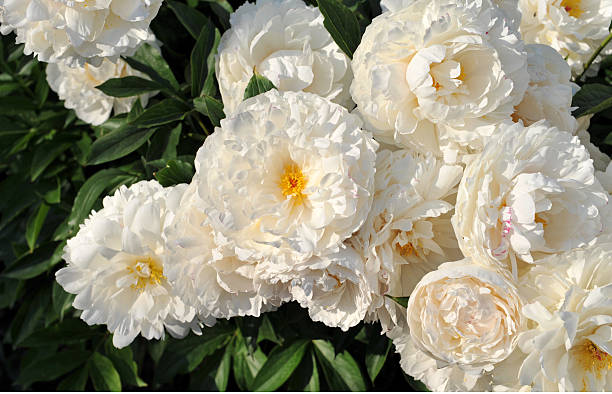
Peony flowers are typically grown and bloom during the late spring to early summer months.
States with temperate climates and suitable growing conditions for peonies may have a higher prevalence of cultivation among gardening enthusiasts and horticultural institutions. These states often include regions such as Himachal Pradesh, Jammu and Kashmir, Uttarakhand, Sikkim, and parts of northeastern India, where cool winters and mild springs are conducive to peony growth and blooming.
As for market share, peonies are valued for their exquisite blooms and are often sold in specialized nurseries, flower shops, and online platforms catering to gardening and floral enthusiasts. Cities and regions with a strong interest in ornamental plants, landscaping, and floristry may have a higher demand for peony flowers and plants.
Peonies prefer soil with a pH level between 6.5 to 7.5, which is neutral to slightly alkaline. Soil pH outside this range can affect nutrient availability and overall plant health.
Incorporating organic matter such as compost, well-rotted manure, or peat moss into the soil before planting can improve soil fertility, texture, and moisture retention. Organic matter also provides essential nutrients for healthy peony growth and blooming.
Peonies do not tolerate waterlogged or soggy soil, which can lead to root rot and other issues. Ensure that the soil has good drainage to prevent water from pooling around the roots.
Peony flowers typically take about 2 to 3 years to establish themselves and start blooming consistently. However, the exact time it takes for peonies to bloom can vary depending on several factors such as the variety of peony, growing conditions, climate.
పియోని పువ్వులు సాధారణంగా పెరుగుతాయి మరియు వసంతకాలం చివరి నుండి వేసవి నెలల ప్రారంభంలో వికసిస్తాయి.
సమశీతోష్ణ వాతావరణం మరియు పియోని కోసం తగిన పెరుగుతున్న పరిస్థితులు ఉన్న రాష్ట్రాలు తోటపని ఔత్సాహికులు మరియు ఉద్యానవన సంస్థలలో సాగు యొక్క అధిక ప్రాబల్యాన్ని కలిగి ఉండవచ్చు. ఈ రాష్ట్రాలు తరచుగా హిమాచల్ ప్రదేశ్, జమ్మూ మరియు కాశ్మీర్, ఉత్తరాఖండ్, సిక్కిం మరియు ఈశాన్య భారతదేశంలోని కొన్ని ప్రాంతాలను కలిగి ఉంటాయి, ఇక్కడ చల్లని శీతాకాలాలు మరియు తేలికపాటి నీటి బుగ్గలు పియోనీ పెరుగుదలకు మరియు పుష్పించేలా అనుకూలంగా ఉంటాయి.
మార్కెట్ వాటా విషయానికొస్తే, పియోనీలు వాటి సున్నితమైన పుష్పాలకు విలువైనవి మరియు తరచుగా ప్రత్యేక నర్సరీలు, పూల దుకాణాలు మరియు తోటపని మరియు పూల ఔత్సాహికులకు అందించే ఆన్లైన్ ప్లాట్ఫారమ్లలో విక్రయించబడతాయి. అలంకారమైన మొక్కలు, ల్యాండ్స్కేపింగ్ మరియు ఫ్లోరిస్ట్రీపై బలమైన ఆసక్తి ఉన్న నగరాలు మరియు ప్రాంతాలు పియోని పువ్వులు మరియు మొక్కలకు ఎక్కువ డిమాండ్ కలిగి ఉండవచ్చు.
పియోనీలు 6.5 నుండి 7.5 మధ్య pH స్థాయిని కలిగి ఉన్న మట్టిని ఇష్టపడతాయి, ఇది తటస్థంగా నుండి కొద్దిగా ఆల్కలీన్గా ఉంటుంది. ఈ పరిధికి వెలుపల ఉన్న నేల pH పోషక లభ్యత మరియు మొత్తం మొక్కల ఆరోగ్యాన్ని ప్రభావితం చేస్తుంది.
నాటడానికి ముందు కంపోస్ట్, బాగా కుళ్ళిన ఎరువు లేదా పీట్ నాచు వంటి సేంద్రియ పదార్థాలను నేలలో చేర్చడం వల్ల నేల సంతానోత్పత్తి, ఆకృతి మరియు తేమ నిలుపుదల మెరుగుపడుతుంది. సేంద్రీయ పదార్థం ఆరోగ్యకరమైన పియోని పెరుగుదల మరియు వికసించడానికి అవసరమైన పోషకాలను కూడా అందిస్తుంది.
పయోనీలు నీరుగారిన లేదా తడిసిన నేలను సహించవు, ఇది రూట్ రాట్ మరియు ఇతర సమస్యలకు దారితీస్తుంది. మూలాల చుట్టూ నీరు చేరకుండా నిరోధించడానికి మట్టికి మంచి పారుదల ఉందని నిర్ధారించుకోండి.
పియోని పువ్వులు సాధారణంగా తమను తాము స్థాపించుకోవడానికి మరియు నిలకడగా వికసించటానికి సుమారు 2 నుండి 3 సంవత్సరాలు పడుతుంది. అయినప్పటికీ, పయోనీలు వికసించటానికి పట్టే ఖచ్చితమైన సమయం వివిధ రకాలైన పియోనీలు, పెరుగుతున్న పరిస్థితులు, వాతావరణం వంటి అనేక అంశాలపై ఆధారపడి ఉంటుంది.
34. MAGNOLIA / 34.చంపకము
Magnolia flowers are typically grown and bloom during the spring season.States with temperate to subtropical climates and suitable growing conditions for magnolias may have a higher prevalence of cultivation among gardening enthusiasts, landscapers, and horticultural institutions. These states often include regions such as Himachal Pradesh, Jammu and Kashmir, Uttarakhand, Sikkim, West Bengal, Assam, Kerala, Tamil Nadu, and parts of northeastern India.
As for market share, magnolia trees and their flowers are valued for their ornamental value and are often sold in nurseries, garden centers, and landscaping businesses catering to gardening and landscaping enthusiasts. Cities and regions with a strong interest in ornamental plants, landscaping, and urban greening projects may have a higher demand for magnolia trees and products.
Magnolias thrive in soil with a pH level ranging from 5.5 to 7.0. Slightly acidic soil is ideal for most magnolia varieties, although some can tolerate neutral pH as well.. Magnolias do not tolerate waterlogged or poorly draining soil. They prefer soil that allows excess water to drain away quickly, preventing waterlogging and root rot.
Incorporating organic matter such as compost, well-rotted manure, or peat moss into the soil before planting can improve soil fertility, structure, and moisture retention. Organic matter also provides essential nutrients for healthy magnolia growth.
Magnolias do not perform well in alkaline soil. If your soil is naturally alkaline, consider growing magnolias in containers filled with acidic potting mix or amending the soil to lower the pH.
On average, it can take about 5 to 10 years for a magnolia tree to reach maturity and start producing abundant blooms. However, this timeline can vary significantly depending on several factors such as the specific variety of magnolia, growing conditions, climate.
మాగ్నోలియా పువ్వులు సాధారణంగా వసంత ఋతువులో పెరుగుతాయి మరియు వికసిస్తాయి. సమశీతోష్ణ నుండి ఉపఉష్ణమండల వాతావరణాలు మరియు మాగ్నోలియాలకు అనుకూలమైన పెరుగుతున్న పరిస్థితులు ఉన్న రాష్ట్రాలు తోటపని ఔత్సాహికులు, ల్యాండ్స్కేపర్లు మరియు ఉద్యానవన సంస్థలలో సాగును ఎక్కువగా కలిగి ఉండవచ్చు. ఈ రాష్ట్రాల్లో తరచుగా హిమాచల్ ప్రదేశ్, జమ్మూ మరియు కాశ్మీర్, ఉత్తరాఖండ్, సిక్కిం, పశ్చిమ బెంగాల్, అస్సాం, కేరళ, తమిళనాడు మరియు ఈశాన్య భారతదేశంలోని కొన్ని ప్రాంతాలు ఉంటాయి.
మార్కెట్ వాటా విషయానికొస్తే, మాగ్నోలియా చెట్లు మరియు వాటి పువ్వులు వాటి అలంకార విలువకు విలువైనవి మరియు వాటిని తరచుగా నర్సరీలు, తోట కేంద్రాలు మరియు తోటపని మరియు తోటపని ఔత్సాహికులకు అందించే ల్యాండ్స్కేపింగ్ వ్యాపారాలలో విక్రయిస్తారు. అలంకారమైన మొక్కలు, తోటపని మరియు పట్టణ పచ్చదనం ప్రాజెక్టులపై బలమైన ఆసక్తి ఉన్న నగరాలు మరియు ప్రాంతాలు మాగ్నోలియా చెట్లు మరియు ఉత్పత్తులకు అధిక డిమాండ్ కలిగి ఉండవచ్చు.
5.5 నుండి 7.0 వరకు pH స్థాయి ఉన్న మట్టిలో మాగ్నోలియాస్ వృద్ధి చెందుతాయి. కొంచెం ఆమ్ల నేల చాలా మాగ్నోలియా రకాలకు అనువైనది, అయితే కొన్ని తటస్థ pHని కూడా తట్టుకోగలవు.. మాగ్నోలియాస్ నీటిలో నిండిన లేదా పేలవంగా ఎండిపోయే మట్టిని సహించవు. వారు మట్టిని ఇష్టపడతారు, ఇది అదనపు నీటిని త్వరగా హరించేలా చేస్తుంది, నీరు నిలిచిపోవడం మరియు రూట్ తెగులును నివారిస్తుంది.
నాటడానికి ముందు కంపోస్ట్, బాగా కుళ్ళిన పేడ లేదా పీట్ నాచు వంటి సేంద్రియ పదార్థాలను నేలలో చేర్చడం వల్ల నేల సంతానోత్పత్తి, నిర్మాణం మరియు తేమ నిలుపుదల మెరుగుపడుతుంది. సేంద్రీయ పదార్థం ఆరోగ్యకరమైన మాగ్నోలియా పెరుగుదలకు అవసరమైన పోషకాలను కూడా అందిస్తుంది.
ఆల్కలీన్ నేలలో మాగ్నోలియాలు బాగా పని చేయవు. మీ నేల సహజంగా ఆల్కలీన్ అయితే, ఆమ్ల పాటింగ్ మిక్స్తో నిండిన కంటైనర్లలో మాగ్నోలియాస్ను పెంచడం లేదా pHని తగ్గించడానికి మట్టిని సవరించడం వంటివి పరిగణించండి.
మాగ్నోలియా చెట్టు పరిపక్వతకు చేరుకోవడానికి మరియు సమృద్ధిగా పుష్పించేలా చేయడానికి సగటున 5 నుండి 10 సంవత్సరాలు పట్టవచ్చు. అయినప్పటికీ, నిర్దిష్ట రకాలైన మాగ్నోలియా, పెరుగుతున్న పరిస్థితులు, వాతావరణం వంటి అనేక అంశాలపై ఆధారపడి ఈ కాలక్రమం గణనీయంగా మారవచ్చు.
35. SNAPDRAGON / 35.స్నాప్డ్రాగన్
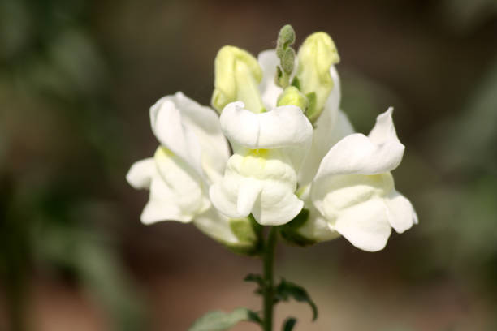
Snapdragon flowers (Antirrhinum majus) are typically grown as annuals or short-lived perennials in many regions. The growing season for snapdragons depends on the climate and local conditions, but they are generally planted and grown during the cooler months of the year.
Snapdragons thrive in temperatures ranging from 60°F to 80°F (15°C to 27°C). They prefer cooler temperatures and may struggle in hot summer conditions, which can cause them to stop blooming or even decline.
States with favorable climates and suitable growing conditions for snapdragon flowers may have a higher prevalence of cultivation among gardening enthusiasts, horticulturalists, and nurseries. These states often include regions such as Maharashtra, Karnataka, Tamil Nadu, Andhra Pradesh, Telangana, Kerala, West Bengal, Gujarat, Uttar Pradesh, and Delhi, among others.
Snapdragons prefer soil that drains well and does not become waterlogged. Excess water can lead to root rot and other issues, so ensure that the soil has good drainage.
While they need well-draining soil, snapdragons also benefit from soil that can retain some moisture. Incorporating organic matter such as compost or peat moss can help improve soil moisture retention.Snapdragons prefer slightly acidic to neutral soil with a pH level ranging from 6.0 to 7.0. Soil pH outside this range can affect nutrient availability and overall plant health.
Adding organic matter like compost, well-rotted manure, or leaf mold to the soil before planting can improve soil fertility and provide essential nutrients for healthy snapdragon growth.
Snapdragon flowers (Antirrhinum majus) typically take about 8 to 12 weeks from sowing to bloom under optimal growing conditions.
స్నాప్డ్రాగన్ పువ్వులు (యాంటీర్రినమ్ మజుస్) సాధారణంగా అనేక ప్రాంతాలలో వార్షిక లేదా స్వల్పకాలిక శాశ్వత మొక్కలుగా పెరుగుతాయి. స్నాప్డ్రాగన్ల పెరుగుదల కాలం వాతావరణం మరియు స్థానిక పరిస్థితులపై ఆధారపడి ఉంటుంది, అయితే అవి సాధారణంగా సంవత్సరంలో చల్లగా ఉండే నెలల్లో నాటబడతాయి మరియు పెరుగుతాయి.
స్నాప్డ్రాగన్లు 60°F నుండి 80°F (15°C నుండి 27°C) వరకు ఉష్ణోగ్రతలలో వృద్ధి చెందుతాయి. వారు చల్లని ఉష్ణోగ్రతలను ఇష్టపడతారు మరియు వేడి వేసవి పరిస్థితులలో కష్టపడవచ్చు, దీని వలన అవి వికసించడం ఆగిపోతాయి లేదా క్షీణించవచ్చు.
అనుకూలమైన వాతావరణం మరియు స్నాప్డ్రాగన్ పువ్వుల కోసం అనుకూలమైన ఎదుగుదల పరిస్థితులు ఉన్న రాష్ట్రాలు తోటపని ఔత్సాహికులు, ఉద్యానవన నిపుణులు మరియు నర్సరీలలో సాగును ఎక్కువగా కలిగి ఉండవచ్చు. ఈ రాష్ట్రాల్లో తరచుగా మహారాష్ట్ర, కర్ణాటక, తమిళనాడు, ఆంధ్రప్రదేశ్, తెలంగాణ, కేరళ, పశ్చిమ బెంగాల్, గుజరాత్, ఉత్తరప్రదేశ్ మరియు ఢిల్లీ వంటి ప్రాంతాలు ఉంటాయి.
స్నాప్డ్రాగన్లు బాగా ఎండిపోయే మట్టిని ఇష్టపడతాయి మరియు నీరు నిండకుండా ఉంటాయి. అధిక నీరు రూట్ రాట్ మరియు ఇతర సమస్యలకు దారి తీస్తుంది, కాబట్టి నేల మంచి పారుదలని కలిగి ఉండేలా చూసుకోండి.
వాటికి బాగా ఎండిపోయే నేల అవసరం అయితే, స్నాప్డ్రాగన్లు కొంత తేమను నిలుపుకునే మట్టి నుండి కూడా ప్రయోజనం పొందుతాయి. కంపోస్ట్ లేదా పీట్ నాచు వంటి సేంద్రియ పదార్థాలను కలుపుకోవడం వల్ల నేల తేమ నిలుపుదల మెరుగుపడుతుంది. స్నాప్డ్రాగన్లు 6.0 నుండి 7.0 వరకు pH స్థాయిని కలిగి ఉండే తటస్థ మట్టికి కొద్దిగా ఆమ్లాన్ని ఇష్టపడతాయి. ఈ పరిధికి వెలుపల ఉన్న నేల pH పోషక లభ్యత మరియు మొత్తం మొక్కల ఆరోగ్యాన్ని ప్రభావితం చేస్తుంది.
నాటడానికి ముందు మట్టికి కంపోస్ట్, బాగా కుళ్ళిన పేడ లేదా ఆకు అచ్చు వంటి సేంద్రియ పదార్ధాలను జోడించడం వలన నేల సంతానోత్పత్తి మెరుగుపడుతుంది మరియు ఆరోగ్యకరమైన స్నాప్డ్రాగన్ పెరుగుదలకు అవసరమైన పోషకాలను అందిస్తుంది.
స్నాప్డ్రాగన్ పువ్వులు (యాంటీర్రినమ్ మజుస్) సాధారణంగా విత్తడం నుండి సరైన పెరుగుతున్న పరిస్థితులలో వికసించే వరకు 8 నుండి 12 వారాలు పడుతుంది.
36. PRIMROSE / 36.ప్రింరోస్
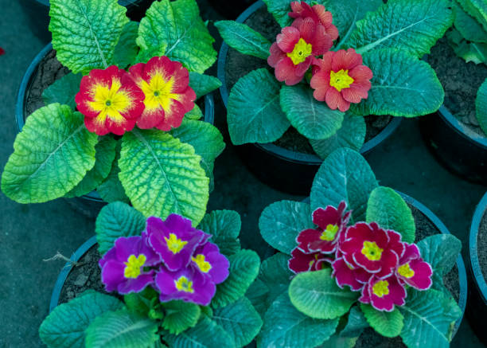
Primrose flowers are typically grown as cool-season plants and are best planted during the fall or early spring, depending on your climate and location.
States with favorable climates and suitable growing conditions for primrose flowers may have a higher prevalence of cultivation among gardening enthusiasts, horticulturalists, and nurseries. These states often include regions such as Maharashtra, Karnataka, Tamil Nadu, Andhra Pradesh, Telangana, Kerala, West Bengal, Gujarat, Uttar Pradesh, and Delhi, among others.
Primroses prefer soil that drains well and does not become waterlogged. Excess water can lead to root rot and other issues, so ensure that the soil has good drainage.While they need well-draining soil, primroses also benefit from soil that can retain some moisture. Incorporating organic matter such as compost or peat moss can help improve soil moisture retention.
Primroses prefer slightly acidic to neutral soil with a pH level ranging from 6.0 to 7.0. Soil pH outside this range can affect nutrient availability and overall plant health.
Adding organic matter like compost, well-rotted manure, or leaf mold to the soil before planting can improve soil fertility and provide essential nutrients for healthy primrose growth.
Primrose flowers typically take about 8 to 12 weeks from planting to bloom under optimal growing conditions.
ప్రింరోస్ పువ్వులు సాధారణంగా చల్లని-సీజన్ మొక్కలుగా పెరుగుతాయి మరియు మీ వాతావరణం మరియు స్థానాన్ని బట్టి పతనం లేదా వసంత ఋతువు ప్రారంభంలో ఉత్తమంగా నాటబడతాయి.
ప్రింరోస్ పువ్వుల కోసం అనుకూలమైన వాతావరణం మరియు అనుకూలమైన పెరుగుతున్న పరిస్థితులు ఉన్న రాష్ట్రాలు తోటపని ఔత్సాహికులు, ఉద్యానవన నిపుణులు మరియు నర్సరీలలో సాగును ఎక్కువగా కలిగి ఉండవచ్చు. ఈ రాష్ట్రాల్లో తరచుగా మహారాష్ట్ర, కర్ణాటక, తమిళనాడు, ఆంధ్రప్రదేశ్, తెలంగాణ, కేరళ, పశ్చిమ బెంగాల్, గుజరాత్, ఉత్తరప్రదేశ్ మరియు ఢిల్లీ వంటి ప్రాంతాలు ఉంటాయి.
ప్రైమ్రోస్ బాగా ప్రవహించే మరియు నీటితో నిండిన మట్టిని ఇష్టపడతాయి. అదనపు నీరు రూట్ రాట్ మరియు ఇతర సమస్యలకు దారి తీస్తుంది, కాబట్టి నేల మంచి పారుదలని కలిగి ఉండేలా చూసుకోండి. వాటికి బాగా ఎండిపోయే నేల అవసరం అయితే, కొంత తేమను నిలుపుకునే మట్టి నుండి ప్రింరోస్ కూడా ప్రయోజనం పొందుతాయి. కంపోస్ట్ లేదా పీట్ నాచు వంటి సేంద్రియ పదార్థాన్ని కలుపుకోవడం నేల తేమ నిలుపుదలని మెరుగుపరచడంలో సహాయపడుతుంది.
ప్రింరోస్ 6.0 నుండి 7.0 వరకు pH స్థాయితో తటస్థ మట్టికి కొద్దిగా ఆమ్లాన్ని ఇష్టపడతాయి. ఈ పరిధికి వెలుపల ఉన్న నేల pH పోషక లభ్యత మరియు మొత్తం మొక్కల ఆరోగ్యాన్ని ప్రభావితం చేస్తుంది.
నాటడానికి ముందు కంపోస్ట్, బాగా కుళ్ళిన పేడ లేదా ఆకు అచ్చు వంటి సేంద్రియ పదార్థాన్ని మట్టికి జోడించడం వల్ల నేల సంతానోత్పత్తి మెరుగుపడుతుంది మరియు ఆరోగ్యకరమైన ప్రింరోస్ పెరుగుదలకు అవసరమైన పోషకాలను అందిస్తుంది.
ప్రింరోస్ పువ్వులు సాధారణంగా సరైన పెరుగుతున్న పరిస్థితులలో వికసించే వరకు నాటడం నుండి 8 నుండి 12 వారాలు పడుతుంది.
37. VIOLA / 37.వయోలా ఫ్లవర్

Viola flowers are typically grown as cool-season plants and are best planted during the fall or early spring, depending on your climate and location.
States with favorable climates and suitable growing conditions for viola flowers may have a higher prevalence of cultivation among gardening enthusiasts, horticulturalists, and nurseries. These states often include regions such as Maharashtra, Karnataka, Tamil Nadu, Andhra Pradesh, Telangana, Kerala, West Bengal, Gujarat, Uttar Pradesh, and Delhi, among others.
Violas prefer soil that drains well and does not become waterlogged. Excess water can lead to root rot and other issues, so ensure that the soil has good drainage.While they need well-draining soil, violas also benefit from soil that can retain some moisture. Incorporating organic matter such as compost or peat moss can help improve soil moisture retention.
Violas prefer slightly acidic to neutral soil with a pH level ranging from 6.0 to 7.0. Soil pH outside this range can affect nutrient availability and overall plant health.
Adding organic matter like compost, well-rotted manure, or leaf mold to the soil before planting can improve soil fertility and provide essential nutrients for healthy viola growth.
Violas grow well in loamy soil with a balanced texture that provides good aeration.
Viola flowers typically take about 8 to 12 weeks from planting to bloom under optimal growing conditions.
వియోలా పువ్వులు సాధారణంగా చల్లని-సీజన్ మొక్కలుగా పెరుగుతాయి మరియు మీ వాతావరణం మరియు ప్రదేశాన్ని బట్టి పతనం లేదా వసంత ఋతువు ప్రారంభంలో ఉత్తమంగా నాటబడతాయి.
అనుకూలమైన వాతావరణం మరియు వయోలా పువ్వుల కోసం అనుకూలమైన పెరుగుతున్న పరిస్థితులు ఉన్న రాష్ట్రాలు తోటపని ఔత్సాహికులు, ఉద్యానవన నిపుణులు మరియు నర్సరీలలో సాగును ఎక్కువగా కలిగి ఉండవచ్చు. ఈ రాష్ట్రాల్లో తరచుగా మహారాష్ట్ర, కర్ణాటక, తమిళనాడు, ఆంధ్రప్రదేశ్, తెలంగాణ, కేరళ, పశ్చిమ బెంగాల్, గుజరాత్, ఉత్తరప్రదేశ్ మరియు ఢిల్లీ వంటి ప్రాంతాలు ఉంటాయి.
వియోలాలు బాగా ప్రవహించే మట్టిని ఇష్టపడతాయి మరియు నీటితో నిండి ఉండవు. అధిక నీరు రూట్ రాట్ మరియు ఇతర సమస్యలకు దారి తీస్తుంది, కాబట్టి నేల మంచి పారుదలని కలిగి ఉండేలా చూసుకోండి. వాటికి బాగా ఎండిపోయే నేల అవసరం అయితే, కొంత తేమను నిలుపుకునే మట్టి నుండి వయోలాలు కూడా ప్రయోజనం పొందుతాయి. కంపోస్ట్ లేదా పీట్ నాచు వంటి సేంద్రియ పదార్థాన్ని కలుపుకోవడం నేల తేమ నిలుపుదలని మెరుగుపరచడంలో సహాయపడుతుంది.
వియోలాస్ 6.0 నుండి 7.0 వరకు pH స్థాయిని కలిగి ఉన్న తటస్థ మట్టికి కొద్దిగా ఆమ్లాన్ని ఇష్టపడతాయి. ఈ పరిధికి వెలుపల ఉన్న నేల pH పోషక లభ్యత మరియు మొత్తం మొక్కల ఆరోగ్యాన్ని ప్రభావితం చేస్తుంది.
నాటడానికి ముందు కంపోస్ట్, బాగా కుళ్ళిన పేడ లేదా ఆకు అచ్చు వంటి సేంద్రియ పదార్థాన్ని మట్టికి జోడించడం వల్ల నేల సంతానోత్పత్తి మెరుగుపడుతుంది మరియు ఆరోగ్యకరమైన వయోలా పెరుగుదలకు అవసరమైన పోషకాలను అందిస్తుంది.
వయోలాలు మంచి గాలిని అందించే సమతుల్య ఆకృతితో లోమీ నేలలో బాగా పెరుగుతాయి.
వియోలా పువ్వులు సాధారణంగా 8 నుండి 12 వారాలు నాటడం నుండి సరైన పెరుగుతున్న పరిస్థితులలో పుష్పించే వరకు పడుతుంది.
38. NASTURTIUM / 38.నాస్టూర్టియం పువ్వు
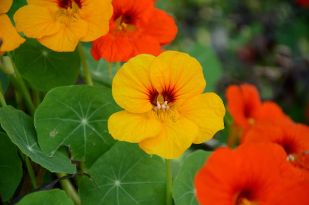
Nasturtium flowers (Tropaeolum majus) are typically grown as warm-season annuals and are best planted during the spring after the last frost date has passed.
Nasturtiums thrive in warm temperatures ranging from 60°F to 75°F (15°C to 24°C). They prefer full sun to partial shade and can tolerate a range of soil types as long as the soil is well-draining.
States with favorable climates and suitable growing conditions for nasturtium flowers may have a higher prevalence of cultivation among gardening enthusiasts and culinary enthusiasts. These states often include regions such as Maharashtra, Karnataka, Tamil Nadu, Andhra Pradesh, Telangana, Kerala, West Bengal, Gujarat, Uttar Pradesh, and Delhi, among others.
Nasturtiums prefer soil that drains well and does not become waterlogged. Excess water can lead to root rot and other issues, so ensure that the soil has good drainage.While they need well-draining soil, nasturtiums also benefit from soil that can retain some moisture. However, they are quite tolerant of drier conditions once established.
Nasturtiums grow well in slightly acidic to neutral soil with a pH level ranging from 6.0 to 7.0. Soil pH outside this range can affect nutrient availability and overall plant health.
They can tolerate a wide range of soil types, including sandy, loamy, and clay soils, as long as the soil is well-draining. Adding organic matter like compost can improve soil structure and fertility.
Nasturtium flowers (Tropaeolum majus) typically take about 7 to 12 weeks from planting to bloom under optimal growing conditions.
నాస్టూర్టియమ్ పువ్వులు (ట్రోపియోలమ్ మజస్) సాధారణంగా వెచ్చని సీజన్ వార్షికంగా పెరుగుతాయి మరియు చివరి మంచు తేదీ ముగిసిన తర్వాత వసంతకాలంలో నాటడం ఉత్తమం.
నాస్టూర్టియంలు 60°F నుండి 75°F (15°C నుండి 24°C) వరకు వెచ్చని ఉష్ణోగ్రతలలో వృద్ధి చెందుతాయి. వారు పాక్షిక నీడ కంటే పూర్తి సూర్యరశ్మిని ఇష్టపడతారు మరియు నేల బాగా ఎండిపోయేంత వరకు నేల రకాలను తట్టుకోగలరు.
నాస్టూర్టియం పువ్వుల కోసం అనుకూలమైన వాతావరణం మరియు అనుకూలమైన పెరుగుతున్న పరిస్థితులు ఉన్న రాష్ట్రాలు తోటపని ఔత్సాహికులు మరియు పాక ఔత్సాహికులలో సాగును ఎక్కువగా కలిగి ఉండవచ్చు. ఈ రాష్ట్రాల్లో తరచుగా మహారాష్ట్ర, కర్ణాటక, తమిళనాడు, ఆంధ్రప్రదేశ్, తెలంగాణ, కేరళ, పశ్చిమ బెంగాల్, గుజరాత్, ఉత్తరప్రదేశ్ మరియు ఢిల్లీ వంటి ప్రాంతాలు ఉంటాయి.
నాస్టూర్టియమ్లు బాగా ఎండిపోయే మట్టిని ఇష్టపడతాయి మరియు నీటితో నిండి ఉండవు. అధిక నీరు రూట్ రాట్ మరియు ఇతర సమస్యలకు దారి తీస్తుంది, కాబట్టి నేల మంచి పారుదలని కలిగి ఉండేలా చూసుకోండి. వాటికి బాగా ఎండిపోయే నేల అవసరం అయితే, నాస్టూర్టియంలు కొంత తేమను నిలుపుకునే నేల నుండి కూడా ప్రయోజనం పొందుతాయి. అయినప్పటికీ, ఒకసారి ఏర్పాటు చేసిన పొడి పరిస్థితులను వారు చాలా తట్టుకోగలుగుతారు.
నాస్టూర్టియమ్లు 6.0 నుండి 7.0 వరకు pH స్థాయితో కొద్దిగా ఆమ్ల నుండి తటస్థ నేలలో బాగా పెరుగుతాయి. ఈ పరిధికి వెలుపల ఉన్న నేల pH పోషక లభ్యత మరియు మొత్తం మొక్కల ఆరోగ్యాన్ని ప్రభావితం చేస్తుంది.
నేల బాగా ఎండిపోయినంత వరకు వారు ఇసుక, లోమీ మరియు బంకమట్టి నేలలతో సహా అనేక రకాల నేలలను తట్టుకోగలరు. కంపోస్ట్ వంటి సేంద్రియ పదార్థాలను జోడించడం వల్ల నేల నిర్మాణం మరియు సంతానోత్పత్తి మెరుగుపడుతుంది.
నాస్టూర్టియం పువ్వులు (ట్రోపియోలమ్ మజస్) సాధారణంగా నాటడం నుండి సరైన పెరుగుతున్న పరిస్థితులలో వికసించే వరకు 7 నుండి 12 వారాలు పడుతుంది.
39. FORGET-ME-NOT / 39.నెక్కరపువ్వు
Forget-me-not flowers are typically grown as cool-season annuals or biennials and are best planted during the cooler months of the year.Forget-me-nots thrive in cool temperatures ranging from 45°F to 65°F (7°C to 18°C). They prefer partial shade to full sun, especially in warmer climates where afternoon shade can help protect them from heat stress.
States with cooler climates and suitable growing conditions for forget-me-not flowers may have a higher prevalence of cultivation among gardening enthusiasts, landscapers, and botanical gardens. These states often include regions such as Himachal Pradesh, Uttarakhand, Jammu and Kashmir, Sikkim, Arunachal Pradesh, Meghalaya, Nagaland, Mizoram, and parts of northeastern India.
Forget-me-nots prefer soil that drains well and does not become waterlogged. Excess water can lead to root rot and other issues, so ensure that the soil has good drainage.
While they need well-draining soil, forget-me-nots also benefit from soil that can retain some moisture. Regular watering, especially during dry periods, helps keep the soil consistently moist but not waterlogged.
Forget-me-nots grow well in slightly acidic to neutral soil with a pH level ranging from 6.0 to 7.0. Soil pH outside this range can affect nutrient availability and overall plant health.
They can tolerate a variety of soil types, including sandy loam, loam, and clay loam, as long as the soil is well-draining and amended with organic matter. Adding compost or well-rotted manure to the soil improves fertility and enhances soil structure.
Forget-me-not flowers typically take about 8 to 12 weeks from planting to bloom under optimal growing conditions.
ఫర్గెట్-మీ-నాట్ పువ్వులు సాధారణంగా కూల్-సీజన్ యాన్యువల్స్ లేదా ద్వైవార్షికంగా పెరుగుతాయి మరియు సంవత్సరంలో చల్లగా ఉండే నెలల్లో బాగా నాటబడతాయి. 45°F నుండి 65°F (7°C) వరకు ఉండే చల్లని ఉష్ణోగ్రతలలో ఫర్గెట్-మీ-నాట్స్ వృద్ధి చెందుతాయి. 18°C వరకు). వారు పూర్తి సూర్యుని కంటే పాక్షిక నీడను ఇష్టపడతారు, ముఖ్యంగా వెచ్చని వాతావరణంలో మధ్యాహ్నం నీడ వేడి ఒత్తిడి నుండి వారిని రక్షించడంలో సహాయపడుతుంది.
చల్లటి వాతావరణం మరియు మరచిపోలేని పువ్వుల కోసం అనుకూలమైన పెరుగుతున్న పరిస్థితులు ఉన్న రాష్ట్రాలు తోటపని ఔత్సాహికులు, ల్యాండ్స్కేపర్లు మరియు బొటానికల్ గార్డెన్లలో సాగును ఎక్కువగా కలిగి ఉండవచ్చు. ఈ రాష్ట్రాల్లో తరచుగా హిమాచల్ ప్రదేశ్, ఉత్తరాఖండ్, జమ్మూ మరియు కాశ్మీర్, సిక్కిం, అరుణాచల్ ప్రదేశ్, మేఘాలయ, నాగాలాండ్, మిజోరాం మరియు ఈశాన్య భారతదేశంలోని కొన్ని ప్రాంతాలు ఉంటాయి.
ఫర్గెట్-మి-నాట్లు బాగా ఎండిపోయే మరియు నీటితో నిండిన మట్టిని ఇష్టపడతాయి. అధిక నీరు రూట్ రాట్ మరియు ఇతర సమస్యలకు దారి తీస్తుంది, కాబట్టి నేల మంచి పారుదలని కలిగి ఉండేలా చూసుకోండి.
వారికి బాగా ఎండిపోయే నేల అవసరం అయితే, కొంత తేమను నిలుపుకునే మట్టి నుండి మర్చిపోయి-నాకు కూడా ప్రయోజనం ఉంటుంది. క్రమం తప్పకుండా నీరు త్రాగుట, ముఖ్యంగా పొడి కాలంలో, మట్టిని స్థిరంగా తేమగా ఉంచడంలో సహాయపడుతుంది, కానీ నీటితో నిండి ఉండదు.
6.0 నుండి 7.0 వరకు pH స్థాయిని కలిగి ఉన్న కొద్దిగా ఆమ్లం నుండి తటస్థ నేలలో ఫర్గెట్-మీ-నాట్స్ బాగా పెరుగుతాయి. ఈ పరిధికి వెలుపల ఉన్న నేల pH పోషక లభ్యత మరియు మొత్తం మొక్కల ఆరోగ్యాన్ని ప్రభావితం చేస్తుంది.
నేల బాగా ఎండిపోయి, సేంద్రీయ పదార్థంతో సవరించబడినంత వరకు, ఇసుక లోవామ్, లోవామ్ మరియు బంకమట్టి లోవామ్తో సహా వివిధ రకాల నేలలను వారు తట్టుకోగలరు. మట్టికి కంపోస్ట్ లేదా బాగా కుళ్ళిన ఎరువును జోడించడం వల్ల సంతానోత్పత్తి మెరుగుపడుతుంది మరియు నేల నిర్మాణాన్ని మెరుగుపరుస్తుంది.
ఫర్గెట్-మీ-నాట్ పువ్వులు సాధారణంగా నాటడం నుండి సరైన పెరుగుతున్న పరిస్థితులలో వికసించటానికి 8 నుండి 12 వారాలు పడుతుంది.
40. SWEETWILLIAM / 40. తీపి విలియంపువ్వు
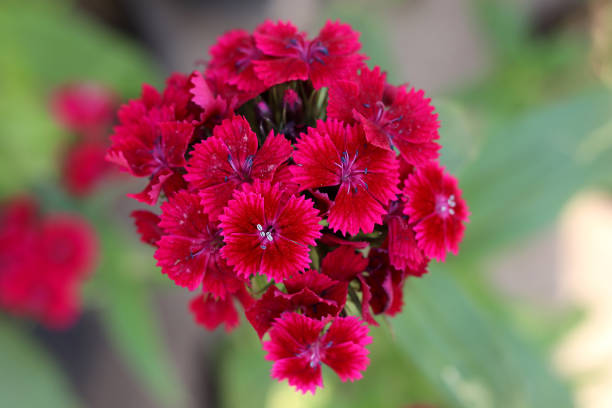
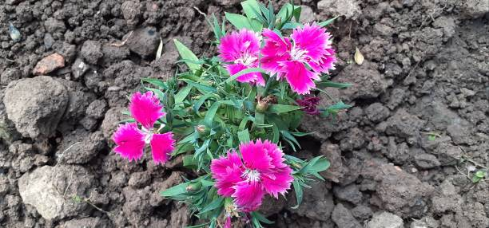
Sweet William flowers (Dianthus barbatus) are typically grown as biennials or short-lived perennials and have a specific growing season based on their life cycle.
States with favorable climates and suitable growing conditions for Sweet William flowers may have a higher prevalence of cultivation among gardening enthusiasts and landscaping professionals. These states often include regions such as Maharashtra, Karnataka, Tamil Nadu, Andhra Pradesh, Telangana, Kerala, West Bengal, Gujarat, Uttar Pradesh, and Delhi, among others.
Sweet William plants prefer soil that drains well to prevent waterlogging, which can lead to root rot and other issues. They do best in soil that allows excess water to drain away quickly.
While they prefer well-draining soil, Sweet William flowers also benefit from soil that can retain some moisture. Regular watering is important to keep the soil consistently moist but not waterlogged.
Sweet William plants prefer slightly acidic to neutral soil with a pH level ranging from 6.0 to 7.5. Soil pH outside this range can affect nutrient availability and overall plant health.
They can grow in a variety of soil types, including loamy, sandy, or clay soils, as long as the soil is well-draining and amended with organic matter. Adding compost or well-rotted manure to the soil improves fertility and enhances soil structure.
Sweet William flowers (Dianthus barbatus) typically take about 10 to 12 weeks from sowing seeds to bloom under optimal growing conditions.
స్వీట్ విలియం పువ్వులు (డయాంథస్ బార్బటస్) సాధారణంగా ద్వైవార్షికాలు లేదా స్వల్పకాలిక శాశ్వత మొక్కలుగా పెరుగుతాయి మరియు వాటి జీవిత చక్రం ఆధారంగా నిర్దిష్ట పెరుగుతున్న కాలం ఉంటుంది.
అనుకూలమైన వాతావరణం మరియు స్వీట్ విలియం పువ్వుల కోసం అనుకూలమైన పెరుగుతున్న పరిస్థితులు ఉన్న రాష్ట్రాలు తోటపని ఔత్సాహికులు మరియు ల్యాండ్స్కేపింగ్ నిపుణులలో సాగును ఎక్కువగా కలిగి ఉండవచ్చు. ఈ రాష్ట్రాల్లో తరచుగా మహారాష్ట్ర, కర్ణాటక, తమిళనాడు, ఆంధ్రప్రదేశ్, తెలంగాణ, కేరళ, పశ్చిమ బెంగాల్, గుజరాత్, ఉత్తరప్రదేశ్ మరియు ఢిల్లీ వంటి ప్రాంతాలు ఉంటాయి.
తీపి విలియం మొక్కలు నీటి ఎద్దడిని నివారించడానికి బాగా ప్రవహించే మట్టిని ఇష్టపడతాయి, ఇది రూట్ రాట్ మరియు ఇతర సమస్యలకు దారితీస్తుంది. మట్టిలో ఇవి ఉత్తమంగా పనిచేస్తాయి, ఇది అదనపు నీటిని త్వరగా హరించడానికి అనుమతిస్తుంది.
వారు బాగా ఎండిపోయే మట్టిని ఇష్టపడతారు, స్వీట్ విలియం పువ్వులు కొంత తేమను నిలుపుకునే మట్టి నుండి కూడా ప్రయోజనం పొందుతాయి. మట్టిని నిలకడగా తేమగా ఉంచడానికి క్రమం తప్పకుండా నీరు త్రాగుట ముఖ్యం కాని నీటితో నిండి ఉండదు.
స్వీట్ విలియం మొక్కలు pH స్థాయి 6.0 నుండి 7.5 వరకు ఉండే తటస్థ మట్టికి కొద్దిగా ఆమ్లాన్ని ఇష్టపడతాయి. ఈ పరిధికి వెలుపల ఉన్న నేల pH పోషక లభ్యత మరియు మొత్తం మొక్కల ఆరోగ్యాన్ని ప్రభావితం చేస్తుంది.
నేల బాగా ఎండిపోయి సేంద్రీయ పదార్థంతో సవరించబడినంత వరకు, లోమీ, ఇసుక లేదా బంకమట్టి నేలలతో సహా వివిధ రకాల నేలల్లో ఇవి పెరుగుతాయి. మట్టికి కంపోస్ట్ లేదా బాగా కుళ్ళిన ఎరువును జోడించడం వల్ల సంతానోత్పత్తి మెరుగుపడుతుంది మరియు నేల నిర్మాణాన్ని మెరుగుపరుస్తుంది.
స్వీట్ విలియం పువ్వులు (డయాంథస్ బార్బటస్) సాధారణంగా విత్తనాలు విత్తడం నుండి సరైన పెరుగుతున్న పరిస్థితులలో వికసించడానికి సుమారు 10 నుండి 12 వారాలు పడుతుంది.
.jpg)
.jpg) 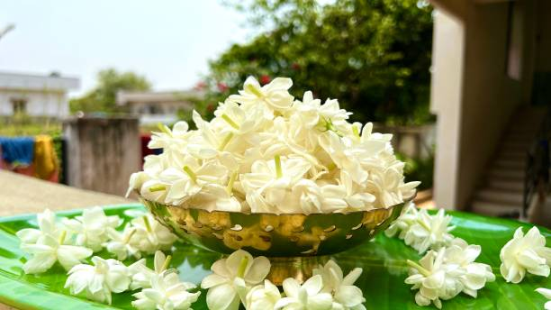
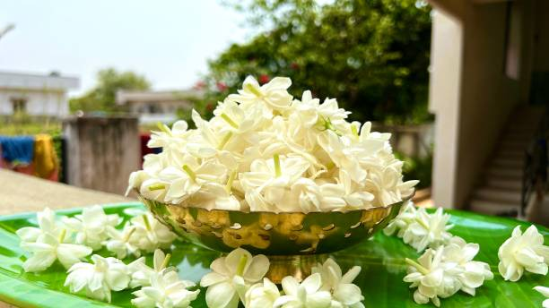